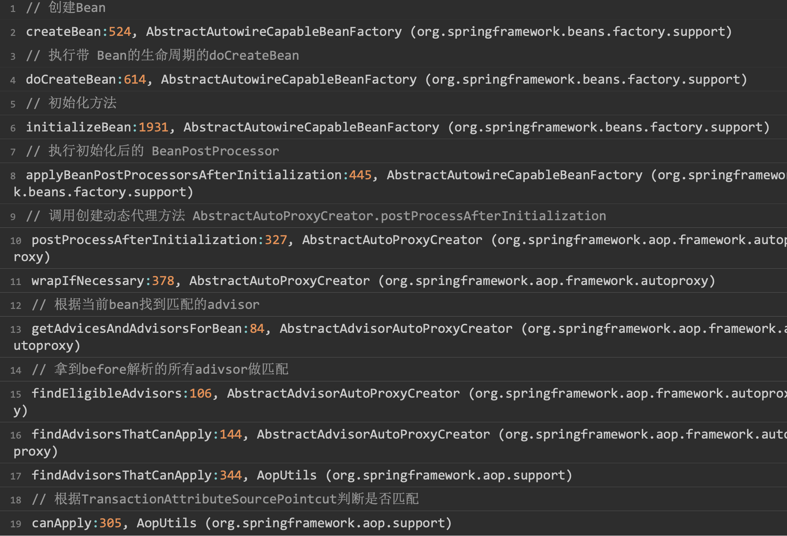

<!DOCTYPE html>


<html lang="zh-CN">


<head>
  <meta charset="utf-8" />
    
  <meta name="viewport" content="width=device-width, initial-scale=1, maximum-scale=1" />
  <title>
    Spring-声明式事务 |  
  </title>
  <meta name="generator" content="hexo-theme-ayer">
  
  <link rel="shortcut icon" href="/favicon.ico" />
  
  
<link rel="stylesheet" href="/dist/main.css">

  
<link rel="stylesheet" href="https://cdn.jsdelivr.net/gh/Shen-Yu/cdn/css/remixicon.min.css">

  
<link rel="stylesheet" href="/css/custom.css">

  
  
<script src="https://cdn.jsdelivr.net/npm/pace-js@1.0.2/pace.min.js"></script>

  
  

  

</head>

</html>

<body>
  <div id="app">
    
      
    <main class="content on">
      <section class="outer">
  <article
  id="post-Spring-声明式事务"
  class="article article-type-post"
  itemscope
  itemprop="blogPost"
  data-scroll-reveal
>
  <div class="article-inner">
    
    <header class="article-header">
       
<h1 class="article-title sea-center" style="border-left:0" itemprop="name">
  Spring-声明式事务
</h1>
 

    </header>
     
    <div class="article-meta">
      <a href="/2020/10/16/Spring-%E5%A3%B0%E6%98%8E%E5%BC%8F%E4%BA%8B%E5%8A%A1/" class="article-date">
  <time datetime="2020-10-16T01:22:20.000Z" itemprop="datePublished">2020-10-16</time>
</a>   
<div class="word_count">
    <span class="post-time">
        <span class="post-meta-item-icon">
            <i class="ri-quill-pen-line"></i>
            <span class="post-meta-item-text"> 字数统计:</span>
            <span class="post-count">5.4k</span>
        </span>
    </span>

    <span class="post-time">
        &nbsp; | &nbsp;
        <span class="post-meta-item-icon">
            <i class="ri-book-open-line"></i>
            <span class="post-meta-item-text"> 阅读时长≈</span>
            <span class="post-count">24 分钟</span>
        </span>
    </span>
</div>
 
    </div>
      
    <div class="tocbot"></div>


  
    <div class="article-entry" itemprop="articleBody">
       
  <h3 id="Spring-声明式事务"><a href="#Spring-声明式事务" class="headerlink" title="Spring-声明式事务"></a>Spring-声明式事务</h3><h4 id="Transactional的使用"><a href="#Transactional的使用" class="headerlink" title="@Transactional的使用"></a>@Transactional的使用</h4><p><strong>SpringBoot</strong>大行其道的今天，基于XML配置的Spring Framework的使用方式注定已成为过去式。 注解驱动应用，面向元数据编程已然成受到越来越多开发者的偏好了，毕竟它的便捷程度、优势都是XML方式 不可比拟的。</p>
<a id="more"></a>

<h5 id="1、开启注解驱动"><a href="#1、开启注解驱动" class="headerlink" title="1、开启注解驱动"></a>1、开启注解驱动</h5><figure class="highlight java"><table><tr><td class="gutter"><pre><span class="line">1</span><br><span class="line">2</span><br><span class="line">3</span><br><span class="line">4</span><br><span class="line">5</span><br><span class="line">6</span><br><span class="line">7</span><br><span class="line">8</span><br><span class="line">9</span><br><span class="line">10</span><br><span class="line">11</span><br><span class="line">12</span><br><span class="line">13</span><br><span class="line">14</span><br><span class="line">15</span><br><span class="line">16</span><br><span class="line">17</span><br><span class="line">18</span><br><span class="line">19</span><br><span class="line">20</span><br><span class="line">21</span><br><span class="line">22</span><br><span class="line">23</span><br><span class="line">24</span><br><span class="line">25</span><br><span class="line">26</span><br><span class="line">27</span><br><span class="line">28</span><br><span class="line">29</span><br></pre></td><td class="code"><pre><span class="line"><span class="meta">@EnableTransactionManagement</span></span><br><span class="line"><span class="meta">@EnableAspectJAutoProxy</span>(exposeProxy = <span class="keyword">true</span>)</span><br><span class="line"><span class="meta">@ComponentScan</span>(basePackages = &#123;<span class="string">"com.ldy"</span>&#125;)</span><br><span class="line"><span class="keyword">public</span> <span class="class"><span class="keyword">class</span> <span class="title">MainConfig</span> </span>&#123;</span><br><span class="line"></span><br><span class="line"></span><br><span class="line">    <span class="meta">@Bean</span></span><br><span class="line">    <span class="function"><span class="keyword">public</span> DataSource <span class="title">dataSource</span><span class="params">()</span> </span>&#123;</span><br><span class="line">        DruidDataSource dataSource = <span class="keyword">new</span> DruidDataSource();</span><br><span class="line">        dataSource.setUsername(<span class="string">"root"</span>);</span><br><span class="line">        dataSource.setPassword(<span class="string">"123456"</span>);</span><br><span class="line">        dataSource.setUrl(<span class="string">"jdbc:mysql://localhost:3306/ldy-ms-alibaba"</span>);</span><br><span class="line">        dataSource.setDriverClassName(<span class="string">"com.mysql.jdbc.Driver"</span>);</span><br><span class="line">        <span class="keyword">return</span> dataSource;</span><br><span class="line">    &#125;</span><br><span class="line"></span><br><span class="line">		<span class="comment">// 配置JdbcTemplate Bean组件</span></span><br><span class="line">    <span class="meta">@Bean</span></span><br><span class="line">    <span class="function"><span class="keyword">public</span> JdbcTemplate <span class="title">jdbcTemplate</span><span class="params">(DataSource dataSource)</span> </span>&#123;</span><br><span class="line">        <span class="keyword">return</span> <span class="keyword">new</span> JdbcTemplate(dataSource);</span><br><span class="line">    &#125;</span><br><span class="line"></span><br><span class="line">		<span class="comment">// 配置事务管理器</span></span><br><span class="line">    <span class="meta">@Bean</span></span><br><span class="line">    <span class="function"><span class="keyword">public</span> PlatformTransactionManager <span class="title">transactionManager</span><span class="params">(DataSource dataSource)</span> </span>&#123;</span><br><span class="line">        <span class="keyword">return</span> <span class="keyword">new</span> DataSourceTransactionManager(dataSource);</span><br><span class="line">    &#125;</span><br><span class="line"></span><br><span class="line">&#125;</span><br></pre></td></tr></table></figure>

<p><strong>提示</strong>:使用@EnableTransactionManagement注解前，请务必保证你已经配置了至少一个PlatformTransactionManager的Bean，否则会报错。(当 然你也可以实现TransactionManagementConfigurer来提供一个专属的，只是我们一般都不这么去做<del>~</del>)</p>
<h5 id="2、在你想要加入事务的方法上-或者类-接口-上-标注-注解"><a href="#2、在你想要加入事务的方法上-或者类-接口-上-标注-注解" class="headerlink" title="2、在你想要加入事务的方法上(或者类(接口)上)标注 注解"></a>2、在你想要加入事务的方法上(或者类(接口)上)标注 注解</h5><figure class="highlight java"><table><tr><td class="gutter"><pre><span class="line">1</span><br><span class="line">2</span><br><span class="line">3</span><br><span class="line">4</span><br><span class="line">5</span><br><span class="line">6</span><br><span class="line">7</span><br><span class="line">8</span><br><span class="line">9</span><br><span class="line">10</span><br><span class="line">11</span><br><span class="line">12</span><br><span class="line">13</span><br><span class="line">14</span><br><span class="line">15</span><br><span class="line">16</span><br><span class="line">17</span><br><span class="line">18</span><br><span class="line">19</span><br><span class="line">20</span><br><span class="line">21</span><br><span class="line">22</span><br><span class="line">23</span><br><span class="line">24</span><br><span class="line">25</span><br><span class="line">26</span><br><span class="line">27</span><br><span class="line">28</span><br><span class="line">29</span><br><span class="line">30</span><br><span class="line">31</span><br><span class="line">32</span><br><span class="line">33</span><br><span class="line">34</span><br><span class="line">35</span><br><span class="line">36</span><br><span class="line">37</span><br><span class="line">38</span><br><span class="line">39</span><br><span class="line">40</span><br></pre></td><td class="code"><pre><span class="line"><span class="meta">@Component</span></span><br><span class="line"><span class="meta">@Transactional</span>(rollbackFor = Exception<span class="class">.<span class="keyword">class</span>)</span></span><br><span class="line"><span class="class"><span class="title">public</span> <span class="title">class</span> <span class="title">PayServiceImpl</span> <span class="keyword">implements</span> <span class="title">PayService</span> </span>&#123;</span><br><span class="line"></span><br><span class="line">    <span class="meta">@Autowired</span></span><br><span class="line">    <span class="keyword">private</span> AccountInfoDao accountInfoDao;</span><br><span class="line"></span><br><span class="line">    <span class="meta">@Autowired</span></span><br><span class="line">    <span class="keyword">private</span> ProductInfoDao productInfoDao;</span><br><span class="line">    </span><br><span class="line">    <span class="function"><span class="keyword">public</span> <span class="keyword">void</span> <span class="title">pay</span><span class="params">(String accountId, <span class="keyword">double</span> money)</span> </span>&#123;</span><br><span class="line">        <span class="comment">//查询余额</span></span><br><span class="line">        <span class="keyword">double</span> blance = accountInfoDao.qryBlanceByUserId(accountId);</span><br><span class="line"></span><br><span class="line">        <span class="comment">//余额不足正常逻辑</span></span><br><span class="line">        <span class="keyword">if</span>(<span class="keyword">new</span> BigDecimal(blance).compareTo(<span class="keyword">new</span> BigDecimal(money))&lt;<span class="number">0</span>) &#123;</span><br><span class="line">            <span class="keyword">throw</span> <span class="keyword">new</span> RuntimeException(<span class="string">"余额不足"</span>);</span><br><span class="line">        &#125;</span><br><span class="line"></span><br><span class="line">        <span class="comment">//更新库存</span></span><br><span class="line"><span class="comment">//        ((PayService) AopContext.currentProxy()).updateProductStore(1);</span></span><br><span class="line">        productInfoDao.updateProductInfo(<span class="number">1</span>);</span><br><span class="line"></span><br><span class="line"></span><br><span class="line">        System.out.println(<span class="number">1</span>/<span class="number">0</span>);</span><br><span class="line"></span><br><span class="line">        <span class="comment">//更新余额</span></span><br><span class="line">        <span class="keyword">int</span> retVal = accountInfoDao.updateAccountBlance(accountId,money);</span><br><span class="line">    &#125;</span><br><span class="line"></span><br><span class="line"><span class="comment">//    @Transactional(propagation =Propagation.REQUIRES_NEW)</span></span><br><span class="line">    <span class="function"><span class="keyword">public</span> <span class="keyword">void</span> <span class="title">updateProductStore</span><span class="params">(Integer productId)</span> </span>&#123;</span><br><span class="line">        <span class="keyword">try</span>&#123;</span><br><span class="line">            productInfoDao.updateProductInfo(productId);</span><br><span class="line">        &#125;</span><br><span class="line">        <span class="keyword">catch</span> (Exception e) &#123;</span><br><span class="line">            <span class="keyword">throw</span> <span class="keyword">new</span> RuntimeException(<span class="string">"内部异常"</span>);</span><br><span class="line">        &#125;</span><br><span class="line">    &#125;</span><br><span class="line">&#125;</span><br></pre></td></tr></table></figure>

<h5 id="3-运行测试"><a href="#3-运行测试" class="headerlink" title="3.运行测试"></a>3.运行测试</h5><figure class="highlight java"><table><tr><td class="gutter"><pre><span class="line">1</span><br><span class="line">2</span><br><span class="line">3</span><br><span class="line">4</span><br><span class="line">5</span><br><span class="line">6</span><br><span class="line">7</span><br></pre></td><td class="code"><pre><span class="line"><span class="function"><span class="keyword">public</span> <span class="keyword">static</span> <span class="keyword">void</span> <span class="title">main</span><span class="params">(String[] args)</span> </span>&#123;</span><br><span class="line">    AnnotationConfigApplicationContext context = <span class="keyword">new</span> AnnotationConfigApplicationContext(MainConfig<span class="class">.<span class="keyword">class</span>)</span>;</span><br><span class="line"></span><br><span class="line">    PayService payService = context.getBean(PayService<span class="class">.<span class="keyword">class</span>)</span>;</span><br><span class="line">    payService.pay(<span class="string">"123456789"</span>,<span class="number">10</span>);</span><br><span class="line"></span><br><span class="line">&#125;</span><br></pre></td></tr></table></figure>

<p>就这么简单，事务就生效了(这条数据并没有insert成功，测试时特意放了1/0的函数)。</p>
<h4 id="原理"><a href="#原理" class="headerlink" title="原理"></a>原理</h4><p>接下来分析注解驱动事务的原理，同样的我们从@EnableTransactionManagement开始:</p>
<p>（之后会补流程图）</p>
<h5 id="EnableTransactionManagement"><a href="#EnableTransactionManagement" class="headerlink" title="@EnableTransactionManagement"></a>@EnableTransactionManagement</h5><figure class="highlight java"><table><tr><td class="gutter"><pre><span class="line">1</span><br><span class="line">2</span><br><span class="line">3</span><br><span class="line">4</span><br><span class="line">5</span><br></pre></td><td class="code"><pre><span class="line"><span class="meta">@Target</span>(ElementType.TYPE)</span><br><span class="line"><span class="meta">@Retention</span>(RetentionPolicy.RUNTIME)</span><br><span class="line"><span class="meta">@Documented</span></span><br><span class="line"><span class="meta">@Import</span>(TransactionManagementConfigurationSelector<span class="class">.<span class="keyword">class</span>)</span></span><br><span class="line"><span class="class"><span class="title">public</span> @<span class="title">interface</span> <span class="title">EnableTransactionManagement</span> </span>&#123;</span><br></pre></td></tr></table></figure>

<p>简直不要太面熟好不好，属性和<strong>@EnableAspectJAutoProxy</strong>注解一个套路。不同之处只在于<strong>@Import</strong>导入器导入 的这个类，不同的是:它导入的是个ImportSelector</p>
<h5 id="TransactionManagementConfigurationSelector"><a href="#TransactionManagementConfigurationSelector" class="headerlink" title="TransactionManagementConfigurationSelector"></a>TransactionManagementConfigurationSelector</h5><p>它所在的包为org.springframework.transaction.annotation，jar属于:<strong>spring-tx</strong>(若引入了spring-jdbc，这个jar 会自动导入)</p>
<figure class="highlight java"><table><tr><td class="gutter"><pre><span class="line">1</span><br><span class="line">2</span><br><span class="line">3</span><br><span class="line">4</span><br><span class="line">5</span><br><span class="line">6</span><br><span class="line">7</span><br><span class="line">8</span><br><span class="line">9</span><br><span class="line">10</span><br><span class="line">11</span><br><span class="line">12</span><br><span class="line">13</span><br><span class="line">14</span><br><span class="line">15</span><br><span class="line">16</span><br><span class="line">17</span><br><span class="line">18</span><br><span class="line">19</span><br><span class="line">20</span><br><span class="line">21</span><br><span class="line">22</span><br><span class="line">23</span><br><span class="line">24</span><br><span class="line">25</span><br><span class="line">26</span><br><span class="line">27</span><br><span class="line">28</span><br><span class="line">29</span><br><span class="line">30</span><br></pre></td><td class="code"><pre><span class="line"><span class="keyword">public</span> <span class="class"><span class="keyword">class</span> <span class="title">TransactionManagementConfigurationSelector</span> <span class="keyword">extends</span> <span class="title">AdviceModeImportSelector</span>&lt;<span class="title">EnableTransactionManagement</span>&gt; </span>&#123;</span><br><span class="line"></span><br><span class="line">   <span class="comment">/**</span></span><br><span class="line"><span class="comment">    * Returns &#123;<span class="doctag">@link</span> ProxyTransactionManagementConfiguration&#125; or</span></span><br><span class="line"><span class="comment">    * &#123;<span class="doctag">@code</span> AspectJ(Jta)TransactionManagementConfiguration&#125; for &#123;<span class="doctag">@code</span> PROXY&#125;</span></span><br><span class="line"><span class="comment">    * and &#123;<span class="doctag">@code</span> ASPECTJ&#125; values of &#123;<span class="doctag">@link</span> EnableTransactionManagement#mode()&#125;,</span></span><br><span class="line"><span class="comment">    * respectively.</span></span><br><span class="line"><span class="comment">    */</span></span><br><span class="line">   <span class="meta">@Override</span></span><br><span class="line">   <span class="keyword">protected</span> String[] selectImports(AdviceMode adviceMode) &#123;</span><br><span class="line">      <span class="keyword">switch</span> (adviceMode) &#123;</span><br><span class="line">          <span class="comment">// 很显然，绝大部分情况下，我们都不会使用AspectJ的静态代理的~~~~~~~~</span></span><br><span class="line">					<span class="comment">// 这里面会导入两个类~~~</span></span><br><span class="line">         <span class="keyword">case</span> PROXY:</span><br><span class="line">            <span class="keyword">return</span> <span class="keyword">new</span> String[] &#123;AutoProxyRegistrar<span class="class">.<span class="keyword">class</span>.<span class="title">getName</span>(),</span></span><br><span class="line"><span class="class">                  <span class="title">ProxyTransactionManagementConfiguration</span>.<span class="title">class</span>.<span class="title">getName</span>()&#125;</span>;</span><br><span class="line">         <span class="keyword">case</span> ASPECTJ:</span><br><span class="line">            <span class="keyword">return</span> <span class="keyword">new</span> String[] &#123;determineTransactionAspectClass()&#125;;</span><br><span class="line">         <span class="keyword">default</span>:</span><br><span class="line">            <span class="keyword">return</span> <span class="keyword">null</span>;</span><br><span class="line">      &#125;</span><br><span class="line">   &#125;</span><br><span class="line"></span><br><span class="line">   <span class="function"><span class="keyword">private</span> String <span class="title">determineTransactionAspectClass</span><span class="params">()</span> </span>&#123;</span><br><span class="line">      <span class="keyword">return</span> (ClassUtils.isPresent(<span class="string">"javax.transaction.Transactional"</span>, getClass().getClassLoader()) ?</span><br><span class="line">            TransactionManagementConfigUtils.JTA_TRANSACTION_ASPECT_CONFIGURATION_CLASS_NAME :</span><br><span class="line">            TransactionManagementConfigUtils.TRANSACTION_ASPECT_CONFIGURATION_CLASS_NAME);</span><br><span class="line">   &#125;</span><br><span class="line"></span><br><span class="line">&#125;</span><br></pre></td></tr></table></figure>

<p>AdviceModeImportSelector目前所知的三个子类是:</p>
<p>AsyncConfigurationSelector、TransactionManagementConfigurationSelector、CachingConfigurationSelector。</p>
<p>由此可见后面还会着重分析的Spring的缓存体系@EnableCaching，和异步@EnableAsync模式也是和这个极其类似的。</p>
<h5 id="AutoProxyRegistrar"><a href="#AutoProxyRegistrar" class="headerlink" title="AutoProxyRegistrar"></a>AutoProxyRegistrar</h5><p>从名字是意思是:自动代理注册器。它是个ImportBeanDefinitionRegistrar，可以实现自己向容器里注册Bean的 定义信息</p>
<figure class="highlight java"><table><tr><td class="gutter"><pre><span class="line">1</span><br><span class="line">2</span><br><span class="line">3</span><br><span class="line">4</span><br><span class="line">5</span><br><span class="line">6</span><br><span class="line">7</span><br><span class="line">8</span><br><span class="line">9</span><br><span class="line">10</span><br><span class="line">11</span><br><span class="line">12</span><br><span class="line">13</span><br><span class="line">14</span><br><span class="line">15</span><br><span class="line">16</span><br><span class="line">17</span><br><span class="line">18</span><br><span class="line">19</span><br><span class="line">20</span><br><span class="line">21</span><br><span class="line">22</span><br><span class="line">23</span><br><span class="line">24</span><br><span class="line">25</span><br><span class="line">26</span><br><span class="line">27</span><br><span class="line">28</span><br><span class="line">29</span><br><span class="line">30</span><br><span class="line">31</span><br><span class="line">32</span><br><span class="line">33</span><br><span class="line">34</span><br><span class="line">35</span><br><span class="line">36</span><br><span class="line">37</span><br><span class="line">38</span><br><span class="line">39</span><br><span class="line">40</span><br><span class="line">41</span><br><span class="line">42</span><br><span class="line">43</span><br><span class="line">44</span><br><span class="line">45</span><br><span class="line">46</span><br><span class="line">47</span><br><span class="line">48</span><br><span class="line">49</span><br><span class="line">50</span><br><span class="line">51</span><br><span class="line">52</span><br><span class="line">53</span><br><span class="line">54</span><br><span class="line">55</span><br><span class="line">56</span><br><span class="line">57</span><br><span class="line">58</span><br><span class="line">59</span><br><span class="line">60</span><br><span class="line">61</span><br><span class="line">62</span><br><span class="line">63</span><br><span class="line">64</span><br><span class="line">65</span><br><span class="line">66</span><br><span class="line">67</span><br><span class="line">68</span><br><span class="line">69</span><br></pre></td><td class="code"><pre><span class="line"><span class="keyword">public</span> <span class="class"><span class="keyword">class</span> <span class="title">AutoProxyRegistrar</span> <span class="keyword">implements</span> <span class="title">ImportBeanDefinitionRegistrar</span> </span>&#123;</span><br><span class="line"></span><br><span class="line">   <span class="keyword">private</span> <span class="keyword">final</span> Log logger = LogFactory.getLog(getClass());</span><br><span class="line"></span><br><span class="line">   <span class="comment">/**</span></span><br><span class="line"><span class="comment">    * Register, escalate, and configure the standard auto proxy creator (APC) against the</span></span><br><span class="line"><span class="comment">    * given registry. Works by finding the nearest annotation declared on the importing</span></span><br><span class="line"><span class="comment">    * &#123;<span class="doctag">@code</span> <span class="doctag">@Configuration</span>&#125; class that has both &#123;<span class="doctag">@code</span> mode&#125; and &#123;<span class="doctag">@code</span> proxyTargetClass&#125;</span></span><br><span class="line"><span class="comment">    * attributes. If &#123;<span class="doctag">@code</span> mode&#125; is set to &#123;<span class="doctag">@code</span> PROXY&#125;, the APC is registered; if</span></span><br><span class="line"><span class="comment">    * &#123;<span class="doctag">@code</span> proxyTargetClass&#125; is set to &#123;<span class="doctag">@code</span> true&#125;, then the APC is forced to use</span></span><br><span class="line"><span class="comment">    * subclass (CGLIB) proxying.</span></span><br><span class="line"><span class="comment">    * &lt;p&gt;Several &#123;<span class="doctag">@code</span> <span class="doctag">@Enable</span>*&#125; annotations expose both &#123;<span class="doctag">@code</span> mode&#125; and</span></span><br><span class="line"><span class="comment">    * &#123;<span class="doctag">@code</span> proxyTargetClass&#125; attributes. It is important to note that most of these</span></span><br><span class="line"><span class="comment">    * capabilities end up sharing a &#123;<span class="doctag">@linkplain</span> AopConfigUtils#AUTO_PROXY_CREATOR_BEAN_NAME</span></span><br><span class="line"><span class="comment">    * single APC&#125;. For this reason, this implementation doesn't "care" exactly which</span></span><br><span class="line"><span class="comment">    * annotation it finds -- as long as it exposes the right &#123;<span class="doctag">@code</span> mode&#125; and</span></span><br><span class="line"><span class="comment">    * &#123;<span class="doctag">@code</span> proxyTargetClass&#125; attributes, the APC can be registered and configured all</span></span><br><span class="line"><span class="comment">    * the same.</span></span><br><span class="line"><span class="comment">    */</span></span><br><span class="line">   <span class="meta">@Override</span></span><br><span class="line">   <span class="function"><span class="keyword">public</span> <span class="keyword">void</span> <span class="title">registerBeanDefinitions</span><span class="params">(AnnotationMetadata importingClassMetadata, BeanDefinitionRegistry registry)</span> </span>&#123;</span><br><span class="line">      <span class="keyword">boolean</span> candidateFound = <span class="keyword">false</span>;</span><br><span class="line">     <span class="comment">// 这里面需要特别注意的是:这里是拿到所有的注解类型~~~而不是只拿@EnableAspectJAutoProxy这个类型的 </span></span><br><span class="line">     <span class="comment">// 原因:因为mode、proxyTargetClass等属性会直接影响到代理得方式，而拥有这些属性的注解至少有:</span></span><br><span class="line">	<span class="comment">// @EnableTransactionManagement、@EnableAsync、@EnableCaching等~~~~</span></span><br><span class="line">	<span class="comment">// 甚至还有启用AOP的注解:@EnableAspectJAutoProxy它也能设置`proxyTargetClass`这个属性的值，因此也会产生关联影响~</span></span><br><span class="line">      Set&lt;String&gt; annTypes = importingClassMetadata.getAnnotationTypes();</span><br><span class="line">      <span class="keyword">for</span> (String annType : annTypes) &#123;</span><br><span class="line">         AnnotationAttributes candidate = AnnotationConfigUtils.attributesFor(importingClassMetadata, annType);</span><br><span class="line">         <span class="keyword">if</span> (candidate == <span class="keyword">null</span>) &#123;</span><br><span class="line">            <span class="keyword">continue</span>;</span><br><span class="line">         &#125;</span><br><span class="line">        <span class="comment">// 拿到注解里的这两个属性</span></span><br><span class="line">				<span class="comment">// 说明:如果你是比如@Configuration或者别的注解的话 他们就是null了</span></span><br><span class="line">         Object mode = candidate.get(<span class="string">"mode"</span>);</span><br><span class="line">         Object proxyTargetClass = candidate.get(<span class="string">"proxyTargetClass"</span>);</span><br><span class="line">        <span class="comment">// 如果存在mode且存在proxyTargetClass 属性</span></span><br><span class="line">				<span class="comment">// 并且两个属性的class类型也是对的，才会进来此处(因此其余注解相当于都挡外面了~)</span></span><br><span class="line">         <span class="keyword">if</span> (mode != <span class="keyword">null</span> &amp;&amp; proxyTargetClass != <span class="keyword">null</span> &amp;&amp; AdviceMode<span class="class">.<span class="keyword">class</span> </span>== mode.getClass() &amp;&amp;</span><br><span class="line">               Boolean<span class="class">.<span class="keyword">class</span> </span>== proxyTargetClass.getClass()) &#123;</span><br><span class="line">           <span class="comment">// 标志:找到了候选的注解~~~~</span></span><br><span class="line">            candidateFound = <span class="keyword">true</span>;</span><br><span class="line">            <span class="keyword">if</span> (mode == AdviceMode.PROXY) &#123;</span><br><span class="line">              <span class="comment">// 这一部是非常重要的~~~~又到了我们熟悉的AopConfigUtils工具类，且是熟悉的registerAutoProxyCreatorIfNecesary方法</span></span><br><span class="line">              <span class="comment">// 它主要是注册了一个`internalAutoProxyCreator`，但是若出现多次的话，这里不是覆盖的形式，而是以第一次的为主</span></span><br><span class="line">							<span class="comment">// 当然它内部有做等级的提升之类的，这个之前也有分析过~~~~</span></span><br><span class="line">               AopConfigUtils.registerAutoProxyCreatorIfNecessary(registry);</span><br><span class="line">               <span class="keyword">if</span> ((Boolean) proxyTargetClass) &#123;</span><br><span class="line">                 <span class="comment">// 看要不要强制使用CGLIB的方式(由此可以发现 这个属性若出现多次，是会是覆盖的形式)</span></span><br><span class="line">                  AopConfigUtils.forceAutoProxyCreatorToUseClassProxying(registry);</span><br><span class="line">                  <span class="keyword">return</span>;</span><br><span class="line">               &#125;</span><br><span class="line">            &#125;</span><br><span class="line">         &#125;</span><br><span class="line">      &#125;</span><br><span class="line">      <span class="keyword">if</span> (!candidateFound &amp;&amp; logger.isInfoEnabled()) &#123;</span><br><span class="line">         String name = getClass().getSimpleName();</span><br><span class="line">         logger.info(String.format(<span class="string">"%s was imported but no annotations were found "</span> +</span><br><span class="line">               <span class="string">"having both 'mode' and 'proxyTargetClass' attributes of type "</span> +</span><br><span class="line">               <span class="string">"AdviceMode and boolean respectively. This means that auto proxy "</span> +</span><br><span class="line">               <span class="string">"creator registration and configuration may not have occurred as "</span> +</span><br><span class="line">               <span class="string">"intended, and components may not be proxied as expected. Check to "</span> +</span><br><span class="line">               <span class="string">"ensure that %s has been @Import'ed on the same class where these "</span> +</span><br><span class="line">               <span class="string">"annotations are declared; otherwise remove the import of %s "</span> +</span><br><span class="line">               <span class="string">"altogether."</span>, name, name, name));</span><br><span class="line">      &#125;</span><br><span class="line">   &#125;</span><br><span class="line"></span><br><span class="line">&#125;</span><br></pre></td></tr></table></figure>

<p>这一步最重要的就是向Spring容器注入了一个自动代理创建器: org.springframework.aop.config.internalAutoProxyCreator，这里有个小细节注意一下，由于AOP和事务注册的都是名字为org.springframework.aop.config.internalAutoProxyCreator 的BeanPostProcessor，但是只会保留一个，AOP的会 覆盖事务的， 因为AOP优先级更大</p>
<figure class="highlight java"><table><tr><td class="gutter"><pre><span class="line">1</span><br><span class="line">2</span><br><span class="line">3</span><br><span class="line">4</span><br><span class="line">5</span><br><span class="line">6</span><br><span class="line">7</span><br><span class="line">8</span><br><span class="line">9</span><br><span class="line">10</span><br><span class="line">11</span><br><span class="line">12</span><br><span class="line">13</span><br><span class="line">14</span><br><span class="line">15</span><br><span class="line">16</span><br><span class="line">17</span><br><span class="line">18</span><br><span class="line">19</span><br><span class="line">20</span><br><span class="line">21</span><br><span class="line">22</span><br><span class="line">23</span><br><span class="line">24</span><br><span class="line">25</span><br></pre></td><td class="code"><pre><span class="line"><span class="meta">@Nullable</span></span><br><span class="line"><span class="function"><span class="keyword">private</span> <span class="keyword">static</span> BeanDefinition <span class="title">registerOrEscalateApcAsRequired</span><span class="params">(</span></span></span><br><span class="line"><span class="function"><span class="params">      Class&lt;?&gt; cls, BeanDefinitionRegistry registry, @Nullable Object source)</span> </span>&#123;</span><br><span class="line"></span><br><span class="line">   Assert.notNull(registry, <span class="string">"BeanDefinitionRegistry must not be null"</span>);</span><br><span class="line"></span><br><span class="line">   <span class="keyword">if</span> (registry.containsBeanDefinition(AUTO_PROXY_CREATOR_BEAN_NAME)) &#123;</span><br><span class="line">      BeanDefinition apcDefinition = registry.getBeanDefinition(AUTO_PROXY_CREATOR_BEAN_NAME);</span><br><span class="line">      <span class="keyword">if</span> (!cls.getName().equals(apcDefinition.getBeanClassName())) &#123;</span><br><span class="line">         <span class="keyword">int</span> currentPriority = findPriorityForClass(apcDefinition.getBeanClassName());</span><br><span class="line">         <span class="keyword">int</span> requiredPriority = findPriorityForClass(cls);</span><br><span class="line">         <span class="keyword">if</span> (currentPriority &lt; requiredPriority) &#123;</span><br><span class="line">            apcDefinition.setBeanClassName(cls.getName());</span><br><span class="line">         &#125;</span><br><span class="line">      &#125;</span><br><span class="line">      <span class="keyword">return</span> <span class="keyword">null</span>;</span><br><span class="line">   &#125;</span><br><span class="line"></span><br><span class="line">   RootBeanDefinition beanDefinition = <span class="keyword">new</span> RootBeanDefinition(cls);</span><br><span class="line">   beanDefinition.setSource(source);</span><br><span class="line">   beanDefinition.getPropertyValues().add(<span class="string">"order"</span>, Ordered.HIGHEST_PRECEDENCE);</span><br><span class="line">   beanDefinition.setRole(BeanDefinition.ROLE_INFRASTRUCTURE);</span><br><span class="line">   registry.registerBeanDefinition(AUTO_PROXY_CREATOR_BEAN_NAME, beanDefinition);</span><br><span class="line">   <span class="keyword">return</span> beanDefinition;</span><br><span class="line">&#125;</span><br></pre></td></tr></table></figure>

<p>所以假如@EnableTransactionManagement和@EnableAspectJAutoProxy 同时存在， 那么AOP的AutoProxyCreator会进行覆盖。</p>
<h5 id="ProxyTransactionManagementConfiguration"><a href="#ProxyTransactionManagementConfiguration" class="headerlink" title="ProxyTransactionManagementConfiguration"></a>ProxyTransactionManagementConfiguration</h5><p>它是一个@Configuration,所以看看它向容器里注入了哪些Bean</p>
<figure class="highlight java"><table><tr><td class="gutter"><pre><span class="line">1</span><br><span class="line">2</span><br><span class="line">3</span><br><span class="line">4</span><br><span class="line">5</span><br><span class="line">6</span><br><span class="line">7</span><br><span class="line">8</span><br><span class="line">9</span><br><span class="line">10</span><br><span class="line">11</span><br><span class="line">12</span><br><span class="line">13</span><br><span class="line">14</span><br><span class="line">15</span><br><span class="line">16</span><br><span class="line">17</span><br><span class="line">18</span><br><span class="line">19</span><br><span class="line">20</span><br><span class="line">21</span><br><span class="line">22</span><br><span class="line">23</span><br><span class="line">24</span><br><span class="line">25</span><br><span class="line">26</span><br><span class="line">27</span><br><span class="line">28</span><br><span class="line">29</span><br><span class="line">30</span><br><span class="line">31</span><br><span class="line">32</span><br><span class="line">33</span><br><span class="line">34</span><br><span class="line">35</span><br><span class="line">36</span><br><span class="line">37</span><br><span class="line">38</span><br><span class="line">39</span><br><span class="line">40</span><br><span class="line">41</span><br><span class="line">42</span><br><span class="line">43</span><br><span class="line">44</span><br><span class="line">45</span><br><span class="line">46</span><br></pre></td><td class="code"><pre><span class="line"><span class="meta">@Configuration</span>(proxyBeanMethods = <span class="keyword">false</span>)</span><br><span class="line"><span class="meta">@Role</span>(BeanDefinition.ROLE_INFRASTRUCTURE)</span><br><span class="line"><span class="keyword">public</span> <span class="class"><span class="keyword">class</span> <span class="title">ProxyTransactionManagementConfiguration</span> <span class="keyword">extends</span> <span class="title">AbstractTransactionManagementConfiguration</span> </span>&#123;</span><br><span class="line"></span><br><span class="line">  <span class="comment">// 这个Advisor可是事务的核心内容</span></span><br><span class="line">   <span class="meta">@Bean</span>(name = TransactionManagementConfigUtils.TRANSACTION_ADVISOR_BEAN_NAME)</span><br><span class="line">   <span class="meta">@Role</span>(BeanDefinition.ROLE_INFRASTRUCTURE)</span><br><span class="line">   <span class="function"><span class="keyword">public</span> BeanFactoryTransactionAttributeSourceAdvisor <span class="title">transactionAdvisor</span><span class="params">(</span></span></span><br><span class="line"><span class="function"><span class="params">         TransactionAttributeSource transactionAttributeSource, TransactionInterceptor transactionInterceptor)</span> </span>&#123;</span><br><span class="line"></span><br><span class="line">      BeanFactoryTransactionAttributeSourceAdvisor advisor = <span class="keyword">new</span> BeanFactoryTransactionAttributeSourceAdvisor();</span><br><span class="line">      advisor.setTransactionAttributeSource(transactionAttributeSource);</span><br><span class="line">      advisor.setAdvice(transactionInterceptor);</span><br><span class="line">      <span class="keyword">if</span> (<span class="keyword">this</span>.enableTx != <span class="keyword">null</span>) &#123;</span><br><span class="line">        <span class="comment">// 顺序由@EnableTransactionManagement注解的Order属性来指定 默认值为:Ordered.LOWEST_PRECEDENCE</span></span><br><span class="line">         advisor.setOrder(<span class="keyword">this</span>.enableTx.&lt;Integer&gt;getNumber(<span class="string">"order"</span>));</span><br><span class="line">      &#125;</span><br><span class="line">      <span class="keyword">return</span> advisor;</span><br><span class="line">   &#125;</span><br><span class="line"></span><br><span class="line">  <span class="comment">// TransactionAttributeSource 这种类特别像 `TargetSource`这种类的设计模式</span></span><br><span class="line">	<span class="comment">// 这里直接使用的是AnnotationTransactionAttributeSource 基于注解的事务属性源~~~</span></span><br><span class="line">   <span class="meta">@Bean</span></span><br><span class="line">   <span class="meta">@Role</span>(BeanDefinition.ROLE_INFRASTRUCTURE)</span><br><span class="line">   <span class="function"><span class="keyword">public</span> TransactionAttributeSource <span class="title">transactionAttributeSource</span><span class="params">()</span> </span>&#123;</span><br><span class="line">      <span class="keyword">return</span> <span class="keyword">new</span> AnnotationTransactionAttributeSource();</span><br><span class="line">   &#125;</span><br><span class="line"></span><br><span class="line">  <span class="comment">// 事务拦截器，它是个`MethodInterceptor`，它也是Spring处理事务最为核心的部分</span></span><br><span class="line"><span class="comment">// 请注意:你可以自己定义一个TransactionInterceptor(同名的)，来覆盖此Bean(注意是覆盖)</span></span><br><span class="line"><span class="comment">// 另外请注意:你自定义的BeanName必须同名，也就是必须名为:transactionInterceptor 否则两个都会注册进容器里 面去~~~~~~</span></span><br><span class="line">   <span class="meta">@Bean</span></span><br><span class="line">   <span class="meta">@Role</span>(BeanDefinition.ROLE_INFRASTRUCTURE)</span><br><span class="line">   <span class="function"><span class="keyword">public</span> TransactionInterceptor <span class="title">transactionInterceptor</span><span class="params">(TransactionAttributeSource transactionAttributeSource)</span> </span>&#123;</span><br><span class="line">      TransactionInterceptor interceptor = <span class="keyword">new</span> TransactionInterceptor();</span><br><span class="line">     <span class="comment">// 事务的属性</span></span><br><span class="line">      interceptor.setTransactionAttributeSource(transactionAttributeSource);</span><br><span class="line">     <span class="comment">// 事务管理器(也就是注解最终需要使用的事务管理器,父类已经处理好了)</span></span><br><span class="line">			<span class="comment">// 此处注意:我们是可议不用特殊指定的，最终它自己会去容器匹配一个适合的~~~~</span></span><br><span class="line">      <span class="keyword">if</span> (<span class="keyword">this</span>.txManager != <span class="keyword">null</span>) &#123;</span><br><span class="line">         interceptor.setTransactionManager(<span class="keyword">this</span>.txManager);</span><br><span class="line">      &#125;</span><br><span class="line">      <span class="keyword">return</span> interceptor;</span><br><span class="line">   &#125;</span><br><span class="line"></span><br><span class="line">&#125;</span><br></pre></td></tr></table></figure>

<p>父类(抽象类) 它实现了ImportAware接口 所以拿到@Import所在类的所有注解信息</p>
<figure class="highlight java"><table><tr><td class="gutter"><pre><span class="line">1</span><br><span class="line">2</span><br><span class="line">3</span><br><span class="line">4</span><br><span class="line">5</span><br><span class="line">6</span><br><span class="line">7</span><br><span class="line">8</span><br><span class="line">9</span><br><span class="line">10</span><br><span class="line">11</span><br><span class="line">12</span><br><span class="line">13</span><br><span class="line">14</span><br><span class="line">15</span><br><span class="line">16</span><br><span class="line">17</span><br><span class="line">18</span><br><span class="line">19</span><br><span class="line">20</span><br><span class="line">21</span><br><span class="line">22</span><br><span class="line">23</span><br><span class="line">24</span><br><span class="line">25</span><br><span class="line">26</span><br><span class="line">27</span><br><span class="line">28</span><br><span class="line">29</span><br><span class="line">30</span><br><span class="line">31</span><br><span class="line">32</span><br><span class="line">33</span><br><span class="line">34</span><br><span class="line">35</span><br><span class="line">36</span><br><span class="line">37</span><br><span class="line">38</span><br><span class="line">39</span><br><span class="line">40</span><br><span class="line">41</span><br><span class="line">42</span><br><span class="line">43</span><br><span class="line">44</span><br><span class="line">45</span><br><span class="line">46</span><br><span class="line">47</span><br><span class="line">48</span><br><span class="line">49</span><br><span class="line">50</span><br><span class="line">51</span><br><span class="line">52</span><br></pre></td><td class="code"><pre><span class="line"><span class="meta">@Configuration</span></span><br><span class="line"><span class="keyword">public</span> <span class="keyword">abstract</span> <span class="class"><span class="keyword">class</span> <span class="title">AbstractTransactionManagementConfiguration</span> <span class="keyword">implements</span> <span class="title">ImportAware</span> </span>&#123;</span><br><span class="line"></span><br><span class="line">   <span class="meta">@Nullable</span></span><br><span class="line">   <span class="keyword">protected</span> AnnotationAttributes enableTx;</span><br><span class="line"></span><br><span class="line">   <span class="comment">/**</span></span><br><span class="line"><span class="comment">    * Default transaction manager, as configured through a &#123;<span class="doctag">@link</span> TransactionManagementConfigurer&#125;.</span></span><br><span class="line"><span class="comment">    */</span></span><br><span class="line">  	<span class="comment">// 此处:注解的默认的事务处理器(可议通过实现接口TransactionManagementConfigurer来自定义配置)</span></span><br><span class="line">		<span class="comment">// 因为事务管理器这个东西，一般来说全局一个就行，但是Spring也提供了定制化的能力~~~</span></span><br><span class="line">   <span class="meta">@Nullable</span></span><br><span class="line">   <span class="keyword">protected</span> TransactionManager txManager;</span><br><span class="line"></span><br><span class="line"></span><br><span class="line">   <span class="meta">@Override</span></span><br><span class="line">   <span class="function"><span class="keyword">public</span> <span class="keyword">void</span> <span class="title">setImportMetadata</span><span class="params">(AnnotationMetadata importMetadata)</span> </span>&#123;</span><br><span class="line">     <span class="comment">// 此处:只拿到@EnableTransactionManagement这个注解的就成~~~~~ 作为AnnotationAttributes保存起来</span></span><br><span class="line">      <span class="keyword">this</span>.enableTx = AnnotationAttributes.fromMap(</span><br><span class="line">            importMetadata.getAnnotationAttributes(EnableTransactionManagement<span class="class">.<span class="keyword">class</span>.<span class="title">getName</span>(), <span class="title">false</span>))</span>;</span><br><span class="line">      <span class="comment">// 这个注解是必须的~~~~~~~~~~~~~~~~</span></span><br><span class="line">     <span class="keyword">if</span> (<span class="keyword">this</span>.enableTx == <span class="keyword">null</span>) &#123;</span><br><span class="line">         <span class="keyword">throw</span> <span class="keyword">new</span> IllegalArgumentException(</span><br><span class="line">               <span class="string">"@EnableTransactionManagement is not present on importing class "</span> + importMetadata.getClassName());</span><br><span class="line">      &#125;</span><br><span class="line">   &#125;</span><br><span class="line"></span><br><span class="line">  <span class="comment">// 可以配置一个Bean实现这个接口。然后给注解驱动的给一个默认的事务管理器~~~~</span></span><br><span class="line">	<span class="comment">// 设计模式都是想通的~~~</span></span><br><span class="line">   <span class="meta">@Autowired</span>(required = <span class="keyword">false</span>)</span><br><span class="line">   <span class="function"><span class="keyword">void</span> <span class="title">setConfigurers</span><span class="params">(Collection&lt;TransactionManagementConfigurer&gt; configurers)</span> </span>&#123;</span><br><span class="line">      <span class="keyword">if</span> (CollectionUtils.isEmpty(configurers)) &#123;</span><br><span class="line">         <span class="keyword">return</span>;</span><br><span class="line">      &#125;</span><br><span class="line">     <span class="comment">// 同样的，最多也只允许你去配置一个~~~</span></span><br><span class="line">      <span class="keyword">if</span> (configurers.size() &gt; <span class="number">1</span>) &#123;</span><br><span class="line">         <span class="keyword">throw</span> <span class="keyword">new</span> IllegalStateException(<span class="string">"Only one TransactionManagementConfigurer may exist"</span>);</span><br><span class="line">      &#125;</span><br><span class="line">      TransactionManagementConfigurer configurer = configurers.iterator().next();</span><br><span class="line">      <span class="keyword">this</span>.txManager = configurer.annotationDrivenTransactionManager();</span><br><span class="line">   &#125;</span><br><span class="line"></span><br><span class="line"></span><br><span class="line">  <span class="comment">// 注册一个监听器工厂，用以支持@TransactionalEventListener注解标注的方法，来监听事务相关的事件</span></span><br><span class="line"> <span class="comment">// 通过事件监听模式来实现事务的监控~~~~</span></span><br><span class="line">   <span class="meta">@Bean</span>(name = TransactionManagementConfigUtils.TRANSACTIONAL_EVENT_LISTENER_FACTORY_BEAN_NAME)</span><br><span class="line">   <span class="meta">@Role</span>(BeanDefinition.ROLE_INFRASTRUCTURE)</span><br><span class="line">   <span class="function"><span class="keyword">public</span> <span class="keyword">static</span> TransactionalEventListenerFactory <span class="title">transactionalEventListenerFactory</span><span class="params">()</span> </span>&#123;</span><br><span class="line">      <span class="keyword">return</span> <span class="keyword">new</span> TransactionalEventListenerFactory();</span><br><span class="line">   &#125;</span><br><span class="line"></span><br><span class="line">&#125;</span><br></pre></td></tr></table></figure>

<p>下面最主要的就是分析<strong>BeanFactoryTransactionAttributeSourceAdvisor</strong>这个增强器</p>
<h5 id="BeanFactoryTransactionAttributeSourceAdvisor"><a href="#BeanFactoryTransactionAttributeSourceAdvisor" class="headerlink" title="BeanFactoryTransactionAttributeSourceAdvisor"></a>BeanFactoryTransactionAttributeSourceAdvisor</h5><p>首先看它的父类: 它是一个和Bean工厂和事务都有关系的Advisor 从上面的配置类可议看出，它是new出来一个。 使用的Advice为:advisor.setAdvice(transactionInterceptor())，即容器内的事务拦截器<del>~</del></p>
<p>使用的事务属性源为:advisor.setTransactionAttributeSource(transactionAttributeSource())，即一个new      AnnotationTransactionAttributeSource()</p>
<p>支持三种事务注解来标注<del>~</del></p>
<figure class="highlight java"><table><tr><td class="gutter"><pre><span class="line">1</span><br><span class="line">2</span><br><span class="line">3</span><br><span class="line">4</span><br><span class="line">5</span><br><span class="line">6</span><br><span class="line">7</span><br><span class="line">8</span><br><span class="line">9</span><br><span class="line">10</span><br><span class="line">11</span><br><span class="line">12</span><br><span class="line">13</span><br><span class="line">14</span><br><span class="line">15</span><br><span class="line">16</span><br><span class="line">17</span><br><span class="line">18</span><br><span class="line">19</span><br><span class="line">20</span><br><span class="line">21</span><br><span class="line">22</span><br><span class="line">23</span><br><span class="line">24</span><br><span class="line">25</span><br><span class="line">26</span><br><span class="line">27</span><br><span class="line">28</span><br><span class="line">29</span><br><span class="line">30</span><br><span class="line">31</span><br><span class="line">32</span><br><span class="line">33</span><br><span class="line">34</span><br><span class="line">35</span><br><span class="line">36</span><br><span class="line">37</span><br><span class="line">38</span><br><span class="line">39</span><br><span class="line">40</span><br><span class="line">41</span><br><span class="line">42</span><br><span class="line">43</span><br><span class="line">44</span><br></pre></td><td class="code"><pre><span class="line"><span class="keyword">public</span> <span class="class"><span class="keyword">class</span> <span class="title">BeanFactoryTransactionAttributeSourceAdvisor</span> <span class="keyword">extends</span> <span class="title">AbstractBeanFactoryPointcutAdvisor</span> </span>&#123;</span><br><span class="line"></span><br><span class="line">   <span class="meta">@Nullable</span></span><br><span class="line">   <span class="keyword">private</span> TransactionAttributeSource transactionAttributeSource;</span><br><span class="line"></span><br><span class="line">  <span class="comment">// 这个很重要，就是切面。它决定了哪些类会被切入，从而生成的代理对象~</span></span><br><span class="line"> <span class="comment">// 关于:TransactionAttributeSourcePointcut 下面有说~</span></span><br><span class="line">   <span class="keyword">private</span> <span class="keyword">final</span> TransactionAttributeSourcePointcut pointcut = <span class="keyword">new</span> TransactionAttributeSourcePointcut() &#123;</span><br><span class="line">      <span class="comment">// 注意此处`getTransactionAttributeSource`就是它的一个抽象方法~~~</span></span><br><span class="line">     <span class="meta">@Override</span></span><br><span class="line">      <span class="meta">@Nullable</span></span><br><span class="line">      <span class="function"><span class="keyword">protected</span> TransactionAttributeSource <span class="title">getTransactionAttributeSource</span><span class="params">()</span> </span>&#123;</span><br><span class="line">         <span class="keyword">return</span> transactionAttributeSource;</span><br><span class="line">      &#125;</span><br><span class="line">   &#125;;</span><br><span class="line"></span><br><span class="line"></span><br><span class="line">   <span class="comment">/**</span></span><br><span class="line"><span class="comment">    * Set the transaction attribute source which is used to find transaction</span></span><br><span class="line"><span class="comment">    * attributes. This should usually be identical to the source reference</span></span><br><span class="line"><span class="comment">    * set on the transaction interceptor itself.</span></span><br><span class="line"><span class="comment">    * <span class="doctag">@see</span> TransactionInterceptor#setTransactionAttributeSource</span></span><br><span class="line"><span class="comment">    */</span></span><br><span class="line">   <span class="comment">// 可议手动设置一个事务属性源~</span></span><br><span class="line">   <span class="function"><span class="keyword">public</span> <span class="keyword">void</span> <span class="title">setTransactionAttributeSource</span><span class="params">(TransactionAttributeSource transactionAttributeSource)</span> </span>&#123;</span><br><span class="line">      <span class="keyword">this</span>.transactionAttributeSource = transactionAttributeSource;</span><br><span class="line">   &#125;</span><br><span class="line"></span><br><span class="line">   <span class="comment">/**</span></span><br><span class="line"><span class="comment">    * Set the &#123;<span class="doctag">@link</span> ClassFilter&#125; to use for this pointcut.</span></span><br><span class="line"><span class="comment">    * Default is &#123;<span class="doctag">@link</span> ClassFilter#TRUE&#125;.</span></span><br><span class="line"><span class="comment">    */</span></span><br><span class="line">  <span class="comment">// 当然我们可以指定ClassFilter 默认情况下:ClassFilter classFilter = ClassFilter.TRUE; 匹配所有的类的</span></span><br><span class="line">   <span class="function"><span class="keyword">public</span> <span class="keyword">void</span> <span class="title">setClassFilter</span><span class="params">(ClassFilter classFilter)</span> </span>&#123;</span><br><span class="line">      <span class="keyword">this</span>.pointcut.setClassFilter(classFilter);</span><br><span class="line">   &#125;</span><br><span class="line"></span><br><span class="line">  <span class="comment">// 此处pointcut就是使用自己的这个pointcut去切入~~~</span></span><br><span class="line">   <span class="meta">@Override</span></span><br><span class="line">   <span class="function"><span class="keyword">public</span> Pointcut <span class="title">getPointcut</span><span class="params">()</span> </span>&#123;</span><br><span class="line">      <span class="keyword">return</span> <span class="keyword">this</span>.pointcut;</span><br><span class="line">   &#125;</span><br><span class="line"></span><br><span class="line">&#125;</span><br></pre></td></tr></table></figure>

<p>下面当然要重点看看TransactionAttributeSourcePointcut，它是怎么切入的 TransactionAttributeSourcePointcut 这个就是事务的匹配Pointcut切面，决定了哪些类需要生成代理对象从而应用事务。</p>
<figure class="highlight java"><table><tr><td class="gutter"><pre><span class="line">1</span><br><span class="line">2</span><br><span class="line">3</span><br><span class="line">4</span><br><span class="line">5</span><br><span class="line">6</span><br><span class="line">7</span><br><span class="line">8</span><br><span class="line">9</span><br><span class="line">10</span><br><span class="line">11</span><br><span class="line">12</span><br><span class="line">13</span><br><span class="line">14</span><br><span class="line">15</span><br><span class="line">16</span><br><span class="line">17</span><br><span class="line">18</span><br><span class="line">19</span><br><span class="line">20</span><br><span class="line">21</span><br><span class="line">22</span><br><span class="line">23</span><br><span class="line">24</span><br><span class="line">25</span><br><span class="line">26</span><br><span class="line">27</span><br><span class="line">28</span><br><span class="line">29</span><br><span class="line">30</span><br><span class="line">31</span><br><span class="line">32</span><br><span class="line">33</span><br><span class="line">34</span><br><span class="line">35</span><br><span class="line">36</span><br><span class="line">37</span><br><span class="line">38</span><br><span class="line">39</span><br><span class="line">40</span><br><span class="line">41</span><br><span class="line">42</span><br><span class="line">43</span><br><span class="line">44</span><br><span class="line">45</span><br><span class="line">46</span><br><span class="line">47</span><br><span class="line">48</span><br><span class="line">49</span><br><span class="line">50</span><br><span class="line">51</span><br><span class="line">52</span><br><span class="line">53</span><br><span class="line">54</span><br><span class="line">55</span><br><span class="line">56</span><br><span class="line">57</span><br><span class="line">58</span><br><span class="line">59</span><br><span class="line">60</span><br><span class="line">61</span><br><span class="line">62</span><br><span class="line">63</span><br><span class="line">64</span><br><span class="line">65</span><br><span class="line">66</span><br><span class="line">67</span><br><span class="line">68</span><br><span class="line">69</span><br><span class="line">70</span><br></pre></td><td class="code"><pre><span class="line"><span class="comment">// 首先它的访问权限事default 显示是给内部使用的</span></span><br><span class="line"><span class="comment">// 首先它继承自StaticMethodMatcherPointcut 所以`ClassFilter classFilter = ClassFilter.TRUE;` 匹配所有的类</span></span><br><span class="line"><span class="comment">// 并且isRuntime=false 表示只需要对方法进行静态匹配即可~~~~</span></span><br><span class="line"><span class="keyword">abstract</span> <span class="class"><span class="keyword">class</span> <span class="title">TransactionAttributeSourcePointcut</span> <span class="keyword">extends</span> <span class="title">StaticMethodMatcherPointcut</span> <span class="keyword">implements</span> <span class="title">Serializable</span> </span>&#123;</span><br><span class="line"></span><br><span class="line">   <span class="function"><span class="keyword">protected</span> <span class="title">TransactionAttributeSourcePointcut</span><span class="params">()</span> </span>&#123;</span><br><span class="line">      setClassFilter(<span class="keyword">new</span> TransactionAttributeSourceClassFilter());</span><br><span class="line">   &#125;</span><br><span class="line"></span><br><span class="line">  <span class="comment">// 方法的匹配 静态匹配即可(因为事务无需要动态匹配这么细粒度~~~)</span></span><br><span class="line">   <span class="meta">@Override</span></span><br><span class="line">   <span class="function"><span class="keyword">public</span> <span class="keyword">boolean</span> <span class="title">matches</span><span class="params">(Method method, Class&lt;?&gt; targetClass)</span> </span>&#123;</span><br><span class="line">     <span class="comment">// 重要:拿到事务属性源~~~~~~</span></span><br><span class="line"> <span class="comment">// 如果tas == null表示没有配置事务属性源，那是全部匹配的 也就是说所有的方法都匹配~~~~(这个处理还是比较让我诧异的~~~)</span></span><br><span class="line"> <span class="comment">// 或者 标注了@Transaction这样的注解的方法才会给与匹配~~~</span></span><br><span class="line">      TransactionAttributeSource tas = getTransactionAttributeSource();</span><br><span class="line">      <span class="keyword">return</span> (tas == <span class="keyword">null</span> || tas.getTransactionAttribute(method, targetClass) != <span class="keyword">null</span>);</span><br><span class="line">   &#125;</span><br><span class="line"></span><br><span class="line">   <span class="meta">@Override</span></span><br><span class="line">   <span class="function"><span class="keyword">public</span> <span class="keyword">boolean</span> <span class="title">equals</span><span class="params">(@Nullable Object other)</span> </span>&#123;</span><br><span class="line">      <span class="keyword">if</span> (<span class="keyword">this</span> == other) &#123;</span><br><span class="line">         <span class="keyword">return</span> <span class="keyword">true</span>;</span><br><span class="line">      &#125;</span><br><span class="line">      <span class="keyword">if</span> (!(other <span class="keyword">instanceof</span> TransactionAttributeSourcePointcut)) &#123;</span><br><span class="line">         <span class="keyword">return</span> <span class="keyword">false</span>;</span><br><span class="line">      &#125;</span><br><span class="line">      TransactionAttributeSourcePointcut otherPc = (TransactionAttributeSourcePointcut) other;</span><br><span class="line">      <span class="keyword">return</span> ObjectUtils.nullSafeEquals(getTransactionAttributeSource(), otherPc.getTransactionAttributeSource());</span><br><span class="line">   &#125;</span><br><span class="line"></span><br><span class="line">   <span class="meta">@Override</span></span><br><span class="line">   <span class="function"><span class="keyword">public</span> <span class="keyword">int</span> <span class="title">hashCode</span><span class="params">()</span> </span>&#123;</span><br><span class="line">      <span class="keyword">return</span> TransactionAttributeSourcePointcut<span class="class">.<span class="keyword">class</span>.<span class="title">hashCode</span>()</span>;</span><br><span class="line">   &#125;</span><br><span class="line"></span><br><span class="line">   <span class="meta">@Override</span></span><br><span class="line">   <span class="function"><span class="keyword">public</span> String <span class="title">toString</span><span class="params">()</span> </span>&#123;</span><br><span class="line">      <span class="keyword">return</span> getClass().getName() + <span class="string">": "</span> + getTransactionAttributeSource();</span><br><span class="line">   &#125;</span><br><span class="line"></span><br><span class="line"></span><br><span class="line">   <span class="comment">/**</span></span><br><span class="line"><span class="comment">    * Obtain the underlying TransactionAttributeSource (may be &#123;<span class="doctag">@code</span> null&#125;).</span></span><br><span class="line"><span class="comment">    * To be implemented by subclasses.</span></span><br><span class="line"><span class="comment">    */</span></span><br><span class="line">   <span class="meta">@Nullable</span></span><br><span class="line">   <span class="function"><span class="keyword">protected</span> <span class="keyword">abstract</span> TransactionAttributeSource <span class="title">getTransactionAttributeSource</span><span class="params">()</span></span>;</span><br><span class="line"></span><br><span class="line"></span><br><span class="line">   <span class="comment">/**</span></span><br><span class="line"><span class="comment">    * &#123;<span class="doctag">@link</span> ClassFilter&#125; that delegates to &#123;<span class="doctag">@link</span> TransactionAttributeSource#isCandidateClass&#125;</span></span><br><span class="line"><span class="comment">    * for filtering classes whose methods are not worth searching to begin with.</span></span><br><span class="line"><span class="comment">    */</span></span><br><span class="line">   <span class="keyword">private</span> <span class="class"><span class="keyword">class</span> <span class="title">TransactionAttributeSourceClassFilter</span> <span class="keyword">implements</span> <span class="title">ClassFilter</span> </span>&#123;</span><br><span class="line"></span><br><span class="line">     <span class="comment">// 实现了如下三个接口的子类，就不需要被代理了 直接放行</span></span><br><span class="line">      <span class="meta">@Override</span></span><br><span class="line">      <span class="function"><span class="keyword">public</span> <span class="keyword">boolean</span> <span class="title">matches</span><span class="params">(Class&lt;?&gt; clazz)</span> </span>&#123;</span><br><span class="line">         <span class="keyword">if</span> (TransactionalProxy<span class="class">.<span class="keyword">class</span>.<span class="title">isAssignableFrom</span>(<span class="title">clazz</span>) ||</span></span><br><span class="line"><span class="class">               <span class="title">TransactionManager</span>.<span class="title">class</span>.<span class="title">isAssignableFrom</span>(<span class="title">clazz</span>) ||</span></span><br><span class="line"><span class="class">               <span class="title">PersistenceExceptionTranslator</span>.<span class="title">class</span>.<span class="title">isAssignableFrom</span>(<span class="title">clazz</span>)) </span>&#123;</span><br><span class="line">            <span class="keyword">return</span> <span class="keyword">false</span>;</span><br><span class="line">         &#125;</span><br><span class="line">         TransactionAttributeSource tas = getTransactionAttributeSource();</span><br><span class="line">         <span class="keyword">return</span> (tas == <span class="keyword">null</span> || tas.isCandidateClass(clazz));</span><br><span class="line">      &#125;</span><br><span class="line">   &#125;</span><br><span class="line"></span><br><span class="line">&#125;</span><br></pre></td></tr></table></figure>

<p>关于matches方法的调用时机：只要容器内的每个bean，都会经过AbstractAutoProxyCreator#postProessAfterInitialization从而会调用wrapIfNecessary方法，因此容器内所有的bean的所有方法在容器启动的时候都会执行matches方法，因此注意缓存的使用。</p>
<h5 id="解析advisor"><a href="#解析advisor" class="headerlink" title="解析advisor"></a>解析advisor</h5><p>在Spring AOP中有过过介绍，解析事务advisor详细代码:</p>
<p>org.springframework.aop.framework.autoproxy.BeanFactoryAdvisorRetrievalHelper#findAdvisorBeans</p>
<figure class="highlight java"><table><tr><td class="gutter"><pre><span class="line">1</span><br><span class="line">2</span><br><span class="line">3</span><br><span class="line">4</span><br><span class="line">5</span><br><span class="line">6</span><br><span class="line">7</span><br><span class="line">8</span><br><span class="line">9</span><br><span class="line">10</span><br><span class="line">11</span><br><span class="line">12</span><br><span class="line">13</span><br><span class="line">14</span><br><span class="line">15</span><br><span class="line">16</span><br><span class="line">17</span><br><span class="line">18</span><br><span class="line">19</span><br><span class="line">20</span><br><span class="line">21</span><br><span class="line">22</span><br><span class="line">23</span><br><span class="line">24</span><br><span class="line">25</span><br><span class="line">26</span><br><span class="line">27</span><br><span class="line">28</span><br><span class="line">29</span><br><span class="line">30</span><br><span class="line">31</span><br><span class="line">32</span><br><span class="line">33</span><br><span class="line">34</span><br><span class="line">35</span><br><span class="line">36</span><br><span class="line">37</span><br><span class="line">38</span><br><span class="line">39</span><br><span class="line">40</span><br><span class="line">41</span><br><span class="line">42</span><br><span class="line">43</span><br><span class="line">44</span><br><span class="line">45</span><br><span class="line">46</span><br><span class="line">47</span><br><span class="line">48</span><br><span class="line">49</span><br><span class="line">50</span><br><span class="line">51</span><br><span class="line">52</span><br><span class="line">53</span><br><span class="line">54</span><br><span class="line">55</span><br><span class="line">56</span><br><span class="line">57</span><br><span class="line">58</span><br><span class="line">59</span><br><span class="line">60</span><br><span class="line">61</span><br><span class="line">62</span><br><span class="line">63</span><br><span class="line">64</span><br><span class="line">65</span><br><span class="line">66</span><br><span class="line">67</span><br><span class="line">68</span><br><span class="line">69</span><br><span class="line">70</span><br><span class="line">71</span><br></pre></td><td class="code"><pre><span class="line"><span class="comment">/**</span></span><br><span class="line"><span class="comment"> * Find all eligible Advisor beans in the current bean factory,</span></span><br><span class="line"><span class="comment"> * ignoring FactoryBeans and excluding beans that are currently in creation.</span></span><br><span class="line"><span class="comment"> * <span class="doctag">@return</span> the list of &#123;<span class="doctag">@link</span> org.springframework.aop.Advisor&#125; beans</span></span><br><span class="line"><span class="comment"> * <span class="doctag">@see</span> #isEligibleBean</span></span><br><span class="line"><span class="comment"> */</span></span><br><span class="line"><span class="function"><span class="keyword">public</span> List&lt;Advisor&gt; <span class="title">findAdvisorBeans</span><span class="params">()</span> </span>&#123;</span><br><span class="line">   <span class="comment">// Determine list of advisor bean names, if not cached already.</span></span><br><span class="line"><span class="comment">/**</span></span><br><span class="line"><span class="comment">* 探测器字段缓存中cachedAdvisorBeanNames 是用来保存我们的Advisor全类名 </span></span><br><span class="line"><span class="comment">* 会在第一个单实例bean的中会去把这个advisor名称解析出来</span></span><br><span class="line"><span class="comment">*/</span></span><br><span class="line">   String[] advisorNames = <span class="keyword">this</span>.cachedAdvisorBeanNames;</span><br><span class="line">   <span class="keyword">if</span> (advisorNames == <span class="keyword">null</span>) &#123;</span><br><span class="line">      <span class="comment">// Do not initialize FactoryBeans here: We need to leave all regular beans</span></span><br><span class="line">      <span class="comment">// uninitialized to let the auto-proxy creator apply to them!</span></span><br><span class="line"> <span class="comment">/**</span></span><br><span class="line"><span class="comment">* 去我们的容器中获取到实现了Advisor接口的实现类</span></span><br><span class="line"><span class="comment">* 而我们的事务注解<span class="doctag">@EnableTransactionManagement</span> 导入了一个叫ProxyTransactionManagementConfiguration配置</span></span><br><span class="line"><span class="comment">* 而在这个配置类中配置了</span></span><br><span class="line"><span class="comment">* <span class="doctag">@Bean</span>(name = TransactionManagementConfigUtils.TRANSACTION_ADVISOR_BEAN_NAME) * *<span class="doctag">@Role</span>(BeanDefinition.ROLE_INFRASTRUCTURE)</span></span><br><span class="line"><span class="comment">*public BeanFactoryTransactionAttributeSourceAdvisor transactionAdvisor(); 然后把他的名字获取出来保存到 本类的属性变量*cachedAdvisorBeanNames中</span></span><br><span class="line"><span class="comment">*/</span></span><br><span class="line">      advisorNames = BeanFactoryUtils.beanNamesForTypeIncludingAncestors(</span><br><span class="line">            <span class="keyword">this</span>.beanFactory, Advisor<span class="class">.<span class="keyword">class</span>, <span class="title">true</span>, <span class="title">false</span>)</span>;</span><br><span class="line">      <span class="keyword">this</span>.cachedAdvisorBeanNames = advisorNames;</span><br><span class="line">   &#125;</span><br><span class="line">  <span class="comment">//若在容器中没有找到，直接返回一个空的集合</span></span><br><span class="line">   <span class="keyword">if</span> (advisorNames.length == <span class="number">0</span>) &#123;</span><br><span class="line">      <span class="keyword">return</span> <span class="keyword">new</span> ArrayList&lt;&gt;();</span><br><span class="line">   &#125;</span><br><span class="line"></span><br><span class="line">   List&lt;Advisor&gt; advisors = <span class="keyword">new</span> ArrayList&lt;&gt;();</span><br><span class="line">  <span class="comment">//ioc容器中找到了我们配置的BeanFactoryTransactionAttributeSourceAdvisor</span></span><br><span class="line">   <span class="keyword">for</span> (String name : advisorNames) &#123;</span><br><span class="line">      <span class="comment">//判断他是不是一个合适的 是我们想要的 默认true</span></span><br><span class="line">      <span class="keyword">if</span> (isEligibleBean(name)) &#123;</span><br><span class="line">         <span class="comment">//BeanFactoryTransactionAttributeSourceAdvisor是不是正在创建的bean</span></span><br><span class="line">         <span class="keyword">if</span> (<span class="keyword">this</span>.beanFactory.isCurrentlyInCreation(name)) &#123;</span><br><span class="line">            <span class="keyword">if</span> (logger.isTraceEnabled()) &#123;</span><br><span class="line">               logger.trace(<span class="string">"Skipping currently created advisor '"</span> + name + <span class="string">"'"</span>);</span><br><span class="line">            &#125;</span><br><span class="line">         &#125;</span><br><span class="line">        <span class="comment">//不是的话</span></span><br><span class="line">         <span class="keyword">else</span> &#123;</span><br><span class="line">            <span class="keyword">try</span> &#123;</span><br><span class="line">              <span class="comment">//显示的调用getBean方法方法创建我们的BeanFactoryTransactionAttributeSourceAdvisor返回去</span></span><br><span class="line">               advisors.add(<span class="keyword">this</span>.beanFactory.getBean(name, Advisor<span class="class">.<span class="keyword">class</span>))</span>;</span><br><span class="line">            &#125;</span><br><span class="line">            <span class="keyword">catch</span> (BeanCreationException ex) &#123;</span><br><span class="line">               Throwable rootCause = ex.getMostSpecificCause();</span><br><span class="line">               <span class="keyword">if</span> (rootCause <span class="keyword">instanceof</span> BeanCurrentlyInCreationException) &#123;</span><br><span class="line">                  BeanCreationException bce = (BeanCreationException) rootCause;</span><br><span class="line">                  String bceBeanName = bce.getBeanName();</span><br><span class="line">                  <span class="keyword">if</span> (bceBeanName != <span class="keyword">null</span> &amp;&amp; <span class="keyword">this</span>.beanFactory.isCurrentlyInCreation(bceBeanName)) &#123;</span><br><span class="line">                     <span class="keyword">if</span> (logger.isTraceEnabled()) &#123;</span><br><span class="line">                        logger.trace(<span class="string">"Skipping advisor '"</span> + name +</span><br><span class="line">                              <span class="string">"' with dependency on currently created bean: "</span> + ex.getMessage());</span><br><span class="line">                     &#125;</span><br><span class="line">                     <span class="comment">// Ignore: indicates a reference back to the bean we're trying to advise.</span></span><br><span class="line">                     <span class="comment">// We want to find advisors other than the currently created bean itself.</span></span><br><span class="line">                     <span class="keyword">continue</span>;</span><br><span class="line">                  &#125;</span><br><span class="line">               &#125;</span><br><span class="line">               <span class="keyword">throw</span> ex;</span><br><span class="line">            &#125;</span><br><span class="line">         &#125;</span><br><span class="line">      &#125;</span><br><span class="line">   &#125;</span><br><span class="line">   <span class="keyword">return</span> advisors;</span><br><span class="line">&#125;</span><br></pre></td></tr></table></figure>

<h5 id="创建动态代理"><a href="#创建动态代理" class="headerlink" title="创建动态代理"></a>创建动态代理</h5><p>在Spring AOP中有过过介绍，区别在于匹配方式的不同: </p>
<ul>
<li>AOP是按照Aspectj提供的API 结合切点表达式进行匹配。 </li>
<li>事务是根据方法或者类或者接口上面的@Transactional进行匹配。</li>
</ul>
<p>所以本文和aop重复的就省略了如下:</p>
<p></p>
<figure class="highlight java"><table><tr><td class="gutter"><pre><span class="line">1</span><br><span class="line">2</span><br><span class="line">3</span><br><span class="line">4</span><br><span class="line">5</span><br><span class="line">6</span><br><span class="line">7</span><br><span class="line">8</span><br><span class="line">9</span><br><span class="line">10</span><br><span class="line">11</span><br><span class="line">12</span><br><span class="line">13</span><br><span class="line">14</span><br><span class="line">15</span><br><span class="line">16</span><br><span class="line">17</span><br><span class="line">18</span><br><span class="line">19</span><br><span class="line">20</span><br><span class="line">21</span><br><span class="line">22</span><br><span class="line">23</span><br><span class="line">24</span><br><span class="line">25</span><br><span class="line">26</span><br><span class="line">27</span><br><span class="line">28</span><br><span class="line">29</span><br><span class="line">30</span><br><span class="line">31</span><br><span class="line">32</span><br><span class="line">33</span><br><span class="line">34</span><br><span class="line">35</span><br><span class="line">36</span><br><span class="line">37</span><br><span class="line">38</span><br><span class="line">39</span><br><span class="line">40</span><br><span class="line">41</span><br><span class="line">42</span><br><span class="line">43</span><br><span class="line">44</span><br><span class="line">45</span><br><span class="line">46</span><br><span class="line">47</span><br><span class="line">48</span><br><span class="line">49</span><br><span class="line">50</span><br><span class="line">51</span><br></pre></td><td class="code"><pre><span class="line"><span class="function"><span class="keyword">public</span> <span class="keyword">static</span> <span class="keyword">boolean</span> <span class="title">canApply</span><span class="params">(Pointcut pc, Class&lt;?&gt; targetClass, <span class="keyword">boolean</span> hasIntroductions)</span> </span>&#123;</span><br><span class="line">   Assert.notNull(pc, <span class="string">"Pointcut must not be null"</span>);</span><br><span class="line">  <span class="comment">// 进行类级别过滤 这里会返回</span></span><br><span class="line">   <span class="keyword">if</span> (!pc.getClassFilter().matches(targetClass)) &#123;</span><br><span class="line">      <span class="keyword">return</span> <span class="keyword">false</span>;</span><br><span class="line">   &#125;</span><br><span class="line"></span><br><span class="line">   <span class="comment">/**</span></span><br><span class="line"><span class="comment"> 	* 进行方法级别过滤</span></span><br><span class="line"><span class="comment"> 	*/</span></span><br><span class="line">  <span class="comment">//如果pc.getMethodMatcher()返回TrueMethodMatcher则匹配所有方法</span></span><br><span class="line">   MethodMatcher methodMatcher = pc.getMethodMatcher();</span><br><span class="line">  </span><br><span class="line">   <span class="keyword">if</span> (methodMatcher == MethodMatcher.TRUE) &#123;</span><br><span class="line">      <span class="comment">// No need to iterate the methods if we're matching any method anyway...</span></span><br><span class="line">      <span class="keyword">return</span> <span class="keyword">true</span>;</span><br><span class="line">   &#125;</span><br><span class="line"></span><br><span class="line">   IntroductionAwareMethodMatcher introductionAwareMethodMatcher = <span class="keyword">null</span>;</span><br><span class="line">  <span class="comment">//判断匹配器是不是IntroductionAwareMethodMatcher 只有AspectJExpressionPointCut才会实现这个接口</span></span><br><span class="line">   <span class="keyword">if</span> (methodMatcher <span class="keyword">instanceof</span> IntroductionAwareMethodMatcher) &#123;</span><br><span class="line">      introductionAwareMethodMatcher = (IntroductionAwareMethodMatcher) methodMatcher;</span><br><span class="line">   &#125;</span><br><span class="line"></span><br><span class="line">  <span class="comment">//创建一个集合用于保存targetClass 的class对象</span></span><br><span class="line">   Set&lt;Class&lt;?&gt;&gt; classes = <span class="keyword">new</span> LinkedHashSet&lt;&gt;();</span><br><span class="line">   <span class="keyword">if</span> (!Proxy.isProxyClass(targetClass)) &#123;</span><br><span class="line">     <span class="comment">//加入到集合中去</span></span><br><span class="line">      classes.add(ClassUtils.getUserClass(targetClass));</span><br><span class="line">   &#125;</span><br><span class="line">  <span class="comment">//获取到targetClass所实现的接口的class对象，然后加入到集合中</span></span><br><span class="line">   classes.addAll(ClassUtils.getAllInterfacesForClassAsSet(targetClass));</span><br><span class="line">	<span class="comment">//循环所有的class对象</span></span><br><span class="line">   <span class="keyword">for</span> (Class&lt;?&gt; clazz : classes) &#123;</span><br><span class="line">     <span class="comment">//通过class获取到所有的方法</span></span><br><span class="line">      Method[] methods = ReflectionUtils.getAllDeclaredMethods(clazz);</span><br><span class="line">      <span class="keyword">for</span> (Method method : methods) &#123;</span><br><span class="line">         <span class="comment">//通过methodMatcher.matches来匹配我们的方法</span></span><br><span class="line">         <span class="keyword">if</span> (introductionAwareMethodMatcher != <span class="keyword">null</span> ?</span><br><span class="line">             <span class="comment">// 通过切点表达式进行匹配 AspectJ方式</span></span><br><span class="line">               introductionAwareMethodMatcher.matches(method, targetClass, hasIntroductions) :</span><br><span class="line">              <span class="comment">// 通过方法匹配器进行匹配 内置aop接口方式</span></span><br><span class="line">               methodMatcher.matches(method, targetClass)) &#123;</span><br><span class="line">            <span class="comment">// 只要有1个方法匹配上了就创建代理</span></span><br><span class="line">            <span class="keyword">return</span> <span class="keyword">true</span>;</span><br><span class="line">         &#125;</span><br><span class="line">      &#125;</span><br><span class="line">   &#125;</span><br><span class="line"></span><br><span class="line">   <span class="keyword">return</span> <span class="keyword">false</span>;</span><br><span class="line">&#125;</span><br></pre></td></tr></table></figure>

<p>关键点:</p>
<ul>
<li><p>if (!pc.getClassFilter().matches(targetClass)) {<br> 初筛时事务不像aop， 上面介绍的TransactionAttributeSourcePointcut的getClassFilter是TrueClassFilter。所以所有的类都能匹配</p>
</li>
<li><p>if (methodMatcher instanceof IntroductionAwareMethodMatcher) {</p>
<p>事务的methodMatcher 没有实现该接口。 只有AOP的实现了该接口所以也导致下面: </p>
</li>
<li><p>methodMatcher.matches(method, targetClass)</p>
<p>所以事务时直接调用methodMatcher.matches进行匹配</p>
</li>
</ul>
<h5 id="匹配方式"><a href="#匹配方式" class="headerlink" title="匹配方式"></a>匹配方式</h5><h6 id="1-org-springframework-transaction-interceptor-TransactionAttributeSourcePointcut-matches"><a href="#1-org-springframework-transaction-interceptor-TransactionAttributeSourcePointcut-matches" class="headerlink" title="1.org.springframework.transaction.interceptor.TransactionAttributeSourcePointcut#matches"></a>1.org.springframework.transaction.interceptor.TransactionAttributeSourcePointcut#matches</h6><figure class="highlight java"><table><tr><td class="gutter"><pre><span class="line">1</span><br><span class="line">2</span><br><span class="line">3</span><br><span class="line">4</span><br><span class="line">5</span><br><span class="line">6</span><br><span class="line">7</span><br><span class="line">8</span><br><span class="line">9</span><br><span class="line">10</span><br><span class="line">11</span><br><span class="line">12</span><br><span class="line">13</span><br><span class="line">14</span><br><span class="line">15</span><br></pre></td><td class="code"><pre><span class="line"><span class="function"><span class="keyword">public</span> <span class="keyword">boolean</span> <span class="title">matches</span><span class="params">(Class&lt;?&gt; clazz)</span> </span>&#123;</span><br><span class="line">   <span class="keyword">if</span> (TransactionalProxy<span class="class">.<span class="keyword">class</span>.<span class="title">isAssignableFrom</span>(<span class="title">clazz</span>) ||</span></span><br><span class="line"><span class="class">         <span class="title">TransactionManager</span>.<span class="title">class</span>.<span class="title">isAssignableFrom</span>(<span class="title">clazz</span>) ||</span></span><br><span class="line"><span class="class">         <span class="title">PersistenceExceptionTranslator</span>.<span class="title">class</span>.<span class="title">isAssignableFrom</span>(<span class="title">clazz</span>)) </span>&#123;</span><br><span class="line">      <span class="keyword">return</span> <span class="keyword">false</span>;</span><br><span class="line">   &#125;</span><br><span class="line">  </span><br><span class="line"><span class="comment">/**</span></span><br><span class="line"><span class="comment">* 获取我们<span class="doctag">@EnableTransactionManagement</span>注解为我们容器中导入的ProxyTransactionManagementConfiguration </span></span><br><span class="line"><span class="comment">* 配置类中的TransactionAttributeSource对象</span></span><br><span class="line"><span class="comment">*/</span></span><br><span class="line">   TransactionAttributeSource tas = getTransactionAttributeSource();</span><br><span class="line">  <span class="comment">// 通过getTransactionAttribute看是否有@Transactional注解</span></span><br><span class="line">   <span class="keyword">return</span> (tas == <span class="keyword">null</span> || tas.isCandidateClass(clazz));</span><br><span class="line">&#125;</span><br></pre></td></tr></table></figure>

<p>关键点</p>
<ul>
<li>TransactionAttributeSource tas = getTransactionAttributeSource();<ul>
<li>这里获取到的时候 通过@Import 的ImportSelect 注册的配置类 ProxyTransactionManagementConfiguration 中设置的 AnnotationTransactionAttributeSource:它是基于注解驱动的事务管理的事务属性源， 和@Transaction 相关，也是现在使用得最最多的方式。</li>
</ul>
</li>
</ul>
<p>它的基本作用为:它遇上比如 @Transaction标注的方法时，此类会分析此事务注解，最终组织形成一个TransactionAttribute供随后的调用。</p>
<ul>
<li>NameMatchTransactionAttributeSource:根据名字就能匹配，然后该事务属性 就会作用在对应的方法上。</li>
<li>MethodMapTransactionAttributeSource:它的使用方式和 NameMatchTransactionAttributeSource基本相同,指定具体方法名</li>
<li>CompositeTransactionAttributeSource :组合模式</li>
</ul>
<h6 id="2-org-springframework-transaction-interceptor-AbstractFallbackTransactionAttributeSource-getTransactionAttribute"><a href="#2-org-springframework-transaction-interceptor-AbstractFallbackTransactionAttributeSource-getTransactionAttribute" class="headerlink" title="2.org.springframework.transaction.interceptor.AbstractFallbackTransactionAttributeSource#getTransactionAttribute"></a>2.org.springframework.transaction.interceptor.AbstractFallbackTransactionAttributeSource#getTransactionAttribute</h6><figure class="highlight java"><table><tr><td class="gutter"><pre><span class="line">1</span><br><span class="line">2</span><br><span class="line">3</span><br><span class="line">4</span><br><span class="line">5</span><br><span class="line">6</span><br><span class="line">7</span><br><span class="line">8</span><br><span class="line">9</span><br><span class="line">10</span><br><span class="line">11</span><br><span class="line">12</span><br><span class="line">13</span><br><span class="line">14</span><br><span class="line">15</span><br><span class="line">16</span><br><span class="line">17</span><br><span class="line">18</span><br><span class="line">19</span><br><span class="line">20</span><br><span class="line">21</span><br><span class="line">22</span><br><span class="line">23</span><br><span class="line">24</span><br><span class="line">25</span><br><span class="line">26</span><br><span class="line">27</span><br><span class="line">28</span><br><span class="line">29</span><br><span class="line">30</span><br><span class="line">31</span><br><span class="line">32</span><br><span class="line">33</span><br><span class="line">34</span><br><span class="line">35</span><br><span class="line">36</span><br><span class="line">37</span><br><span class="line">38</span><br><span class="line">39</span><br><span class="line">40</span><br><span class="line">41</span><br><span class="line">42</span><br><span class="line">43</span><br><span class="line">44</span><br><span class="line">45</span><br><span class="line">46</span><br><span class="line">47</span><br><span class="line">48</span><br><span class="line">49</span><br><span class="line">50</span><br><span class="line">51</span><br><span class="line">52</span><br></pre></td><td class="code"><pre><span class="line"><span class="meta">@Override</span></span><br><span class="line"><span class="meta">@Nullable</span></span><br><span class="line"><span class="function"><span class="keyword">public</span> TransactionAttribute <span class="title">getTransactionAttribute</span><span class="params">(Method method, @Nullable Class&lt;?&gt; targetClass)</span> </span>&#123;</span><br><span class="line">  <span class="comment">//判断method所在的class 是不是Object类型</span></span><br><span class="line">  <span class="keyword">if</span> (method.getDeclaringClass() == Object<span class="class">.<span class="keyword">class</span>) </span>&#123;</span><br><span class="line">      <span class="keyword">return</span> <span class="keyword">null</span>;</span><br><span class="line">   &#125;</span><br><span class="line"></span><br><span class="line">   <span class="comment">// First, see if we have a cached value.</span></span><br><span class="line">  <span class="comment">//构建我们的缓存key</span></span><br><span class="line">   Object cacheKey = getCacheKey(method, targetClass);</span><br><span class="line">  <span class="comment">//先去我们的缓存中获取</span></span><br><span class="line">   TransactionAttribute cached = <span class="keyword">this</span>.attributeCache.get(cacheKey);</span><br><span class="line">  <span class="comment">//缓存中不为空</span></span><br><span class="line">   <span class="keyword">if</span> (cached != <span class="keyword">null</span>) &#123;</span><br><span class="line">      <span class="comment">// Value will either be canonical value indicating there is no transaction attribute,</span></span><br><span class="line">      <span class="comment">// or an actual transaction attribute.</span></span><br><span class="line">     <span class="comment">//判断缓存中的对象是不是空事务属性的对象</span></span><br><span class="line">      <span class="keyword">if</span> (cached == NULL_TRANSACTION_ATTRIBUTE) &#123;</span><br><span class="line">         <span class="keyword">return</span> <span class="keyword">null</span>;</span><br><span class="line">      &#125;</span><br><span class="line">     <span class="comment">//不是的话 就进行返回</span></span><br><span class="line">      <span class="keyword">else</span> &#123;</span><br><span class="line">         <span class="keyword">return</span> cached;</span><br><span class="line">      &#125;</span><br><span class="line">   &#125;</span><br><span class="line">   <span class="keyword">else</span> &#123;</span><br><span class="line">      <span class="comment">// We need to work it out.</span></span><br><span class="line">      <span class="comment">//我们需要查找我们的事务注解 匹配在这体现</span></span><br><span class="line">      TransactionAttribute txAttr = computeTransactionAttribute(method, targetClass);</span><br><span class="line">      <span class="comment">// Put it in the cache.</span></span><br><span class="line">     <span class="comment">// 若解析出来的事务注解属性为空</span></span><br><span class="line">      <span class="keyword">if</span> (txAttr == <span class="keyword">null</span>) &#123;</span><br><span class="line">        <span class="comment">//往缓存中存放空事务注解属性</span></span><br><span class="line">         <span class="keyword">this</span>.attributeCache.put(cacheKey, NULL_TRANSACTION_ATTRIBUTE);</span><br><span class="line">      &#125;</span><br><span class="line">      <span class="keyword">else</span> &#123;</span><br><span class="line">        <span class="comment">//我们执行方法的描述符 全类名+方法名</span></span><br><span class="line">         String methodIdentification = ClassUtils.getQualifiedMethodName(method, targetClass);</span><br><span class="line">        <span class="comment">//把方法描述设置到事务属性上去</span></span><br><span class="line">         <span class="keyword">if</span> (txAttr <span class="keyword">instanceof</span> DefaultTransactionAttribute) &#123;</span><br><span class="line">            ((DefaultTransactionAttribute) txAttr).setDescriptor(methodIdentification);</span><br><span class="line">         &#125;</span><br><span class="line">         <span class="keyword">if</span> (logger.isTraceEnabled()) &#123;</span><br><span class="line">            logger.trace(<span class="string">"Adding transactional method '"</span> + methodIdentification + <span class="string">"' with attribute: "</span> + txAttr);</span><br><span class="line">         &#125;</span><br><span class="line">        <span class="comment">//加入到缓存</span></span><br><span class="line">         <span class="keyword">this</span>.attributeCache.put(cacheKey, txAttr);</span><br><span class="line">      &#125;</span><br><span class="line">      <span class="keyword">return</span> txAttr;</span><br><span class="line">   &#125;</span><br><span class="line">&#125;</span><br></pre></td></tr></table></figure>

<p>关键点:</p>
<ul>
<li>if (cached != null) {<ul>
<li>先从缓存中取， 因为这个过程相对比较耗资源，会使用缓存存储已经解析过的， 后续</li>
</ul>
</li>
</ul>
<p>调用时需要获取</p>
<ul>
<li><p>TransactionAttribute txAttr = computeTransactionAttribute(method, targetClass);</p>
<ul>
<li>该方法中具体执行匹配过程 大致是: 实现类方法—&gt;接口的方法—&gt;实现类—-&gt;接口类</li>
</ul>
</li>
<li><p>((DefaultTransactionAttribute) txAttr).setDescriptor(methodIdentification);</p>
<ul>
<li>记录当前需要执行事务的方法名，记录到 方便后续调用时判断</li>
</ul>
</li>
<li><p>this.attributeCache.put(cacheKey, txAttr);</p>
<ul>
<li>加入到缓存中</li>
</ul>
</li>
</ul>
<ol start="3">
<li><h6 id="看下是怎么匹配的"><a href="#看下是怎么匹配的" class="headerlink" title="看下是怎么匹配的:"></a>看下是怎么匹配的:</h6><p>org.springframework.transaction.interceptor.AbstractFallbackTransactionAttributeSource#computeTransactionAttribute</p>
</li>
</ol>
<figure class="highlight java"><table><tr><td class="gutter"><pre><span class="line">1</span><br><span class="line">2</span><br><span class="line">3</span><br><span class="line">4</span><br><span class="line">5</span><br><span class="line">6</span><br><span class="line">7</span><br><span class="line">8</span><br><span class="line">9</span><br><span class="line">10</span><br><span class="line">11</span><br><span class="line">12</span><br><span class="line">13</span><br><span class="line">14</span><br><span class="line">15</span><br><span class="line">16</span><br><span class="line">17</span><br><span class="line">18</span><br><span class="line">19</span><br><span class="line">20</span><br><span class="line">21</span><br><span class="line">22</span><br><span class="line">23</span><br><span class="line">24</span><br><span class="line">25</span><br><span class="line">26</span><br><span class="line">27</span><br><span class="line">28</span><br><span class="line">29</span><br><span class="line">30</span><br><span class="line">31</span><br><span class="line">32</span><br><span class="line">33</span><br><span class="line">34</span><br><span class="line">35</span><br><span class="line">36</span><br><span class="line">37</span><br><span class="line">38</span><br><span class="line">39</span><br><span class="line">40</span><br><span class="line">41</span><br><span class="line">42</span><br><span class="line">43</span><br></pre></td><td class="code"><pre><span class="line"><span class="meta">@Nullable</span></span><br><span class="line"><span class="function"><span class="keyword">protected</span> TransactionAttribute <span class="title">computeTransactionAttribute</span><span class="params">(Method method, @Nullable Class&lt;?&gt; targetClass)</span> </span>&#123;</span><br><span class="line">   <span class="comment">// Don't allow no-public methods as required.</span></span><br><span class="line">   <span class="comment">//判断我们的事务方法上的修饰符是不是public的</span></span><br><span class="line">   <span class="keyword">if</span> (allowPublicMethodsOnly() &amp;&amp; !Modifier.isPublic(method.getModifiers())) &#123;</span><br><span class="line">      <span class="keyword">return</span> <span class="keyword">null</span>;</span><br><span class="line">   &#125;</span><br><span class="line"></span><br><span class="line">   <span class="comment">// The method may be on an interface, but we need attributes from the target class.</span></span><br><span class="line">   <span class="comment">// If the target class is null, the method will be unchanged.</span></span><br><span class="line">   Method specificMethod = AopUtils.getMostSpecificMethod(method, targetClass);</span><br><span class="line"></span><br><span class="line">   <span class="comment">// First try is the method in the target class.</span></span><br><span class="line">  <span class="comment">//第一步，我们先去目标class的方法上去找我们的事务注解</span></span><br><span class="line">   TransactionAttribute txAttr = findTransactionAttribute(specificMethod);</span><br><span class="line">   <span class="keyword">if</span> (txAttr != <span class="keyword">null</span>) &#123;</span><br><span class="line">      <span class="keyword">return</span> txAttr;</span><br><span class="line">   &#125;</span><br><span class="line"></span><br><span class="line">   <span class="comment">// Second try is the transaction attribute on the target class.</span></span><br><span class="line">  <span class="comment">//第二步:去我们targetClass类[实现类]上找事务注解</span></span><br><span class="line">   txAttr = findTransactionAttribute(specificMethod.getDeclaringClass());</span><br><span class="line">   <span class="keyword">if</span> (txAttr != <span class="keyword">null</span> &amp;&amp; ClassUtils.isUserLevelMethod(method)) &#123;</span><br><span class="line">      <span class="keyword">return</span> txAttr;</span><br><span class="line">   &#125;</span><br><span class="line">	<span class="comment">// 具体方法不是当前的方法说明 当前方法是接口方法</span></span><br><span class="line">   <span class="keyword">if</span> (specificMethod != method) &#123;</span><br><span class="line">      <span class="comment">// Fallback is to look at the original method.</span></span><br><span class="line">      <span class="comment">//去我们的实现类的接口上的方法去找事务注解</span></span><br><span class="line">      txAttr = findTransactionAttribute(method);</span><br><span class="line">      <span class="keyword">if</span> (txAttr != <span class="keyword">null</span>) &#123;</span><br><span class="line">         <span class="keyword">return</span> txAttr;</span><br><span class="line">      &#125;</span><br><span class="line">      <span class="comment">// Last fallback is the class of the original method.</span></span><br><span class="line">     <span class="comment">//去我们的实现类的接口上去找事务注解</span></span><br><span class="line">      txAttr = findTransactionAttribute(method.getDeclaringClass());</span><br><span class="line">      <span class="keyword">if</span> (txAttr != <span class="keyword">null</span> &amp;&amp; ClassUtils.isUserLevelMethod(method)) &#123;</span><br><span class="line">         <span class="keyword">return</span> txAttr;</span><br><span class="line">      &#125;</span><br><span class="line">   &#125;</span><br><span class="line"></span><br><span class="line">   <span class="keyword">return</span> <span class="keyword">null</span>;</span><br><span class="line">&#125;</span><br></pre></td></tr></table></figure>

<p>关键点:<br> 这个方法乍一看，觉得是先从实现类方法–&gt;实现类—&gt;接口方法—&gt;接口类 但是!!!! 他在第一 个实现方法查找就已经找了接口方法父类方法。在实现类里面就找了接口类和父类， 所以接口方法—&gt;接</p>
<p>口类 基本走了也没啥用</p>
<ul>
<li><p>Method specificMethod = AopUtils.getMostSpecificMethod(method, targetClass);</p>
<ul>
<li>得到具体方法， 如果method是接口方法那将从targetClass得到实现类的方法 ， 所以说无论 传的是接口还是实现， 都会先解析实现类， 所以接口传进来基本没啥用，因为 findTransactionAttribute方法本身就会去接口中解析</li>
</ul>
</li>
<li><p>TransactionAttribute txAttr = findTransactionAttribute(specificMethod);</p>
<ul>
<li>根据具体方法解析</li>
</ul>
</li>
<li><p>txAttr = findTransactionAttribute(specificMethod.getDeclaringClass());</p>
<ul>
<li>根据实现类解析</li>
</ul>
</li>
</ul>
<h4 id="Transactional简单解释"><a href="#Transactional简单解释" class="headerlink" title="@Transactional简单解释"></a>@Transactional简单解释</h4><p>这个事务注解可以用在类上，也可以用在方法上。</p>
<ul>
<li>将事务注解标记到服务组件类级别,相当于为该服务组件的每个服务方法都应用了这个注解 </li>
<li>事务注解应用在方法级别，是更细粒度的一种事务注解方式</li>
</ul>
<p><strong>另外，Spring支持三种不同的事务注解：</strong></p>
<ol>
<li>Spring 事务注解 org.springframework.transaction.annotation.Transactional(纯正血统，官方推荐)</li>
<li>JTA事务注解 javax.transaction.Transactional</li>
<li>EJB 3 事务注解 javax.ejb.TransactionAttribute 上面三个注解虽然语义上一样，但是使用方式上不完全一样，若真要使其它的时请注意各自的使用方式~</li>
</ol>
<p>注意 : 如果某个方法和该方法所属类上都有事务注解属性，优先使用方法上的事务注解属性。</p>
 
      <!-- reward -->
      
      <div id="reword-out">
        <div id="reward-btn">
          打赏
        </div>
      </div>
      
    </div>
    

    <!-- copyright -->
    
    <div class="declare">
      <ul class="post-copyright">
        <li>
          <i class="ri-copyright-line"></i>
          <strong>版权声明： </strong>
          本博客所有文章除特别声明外，著作权归作者所有。转载请注明出处！
        </li>
      </ul>
    </div>
    
    <footer class="article-footer">
       
<div class="share-btn">
      <span class="share-sns share-outer">
        <i class="ri-share-forward-line"></i>
        分享
      </span>
      <div class="share-wrap">
        <i class="arrow"></i>
        <div class="share-icons">
          
          <a class="weibo share-sns" href="javascript:;" data-type="weibo">
            <i class="ri-weibo-fill"></i>
          </a>
          <a class="weixin share-sns wxFab" href="javascript:;" data-type="weixin">
            <i class="ri-wechat-fill"></i>
          </a>
          <a class="qq share-sns" href="javascript:;" data-type="qq">
            <i class="ri-qq-fill"></i>
          </a>
          <a class="douban share-sns" href="javascript:;" data-type="douban">
            <i class="ri-douban-line"></i>
          </a>
          <!-- <a class="qzone share-sns" href="javascript:;" data-type="qzone">
            <i class="icon icon-qzone"></i>
          </a> -->
          
          <a class="facebook share-sns" href="javascript:;" data-type="facebook">
            <i class="ri-facebook-circle-fill"></i>
          </a>
          <a class="twitter share-sns" href="javascript:;" data-type="twitter">
            <i class="ri-twitter-fill"></i>
          </a>
          <a class="google share-sns" href="javascript:;" data-type="google">
            <i class="ri-google-fill"></i>
          </a>
        </div>
      </div>
</div>

<div class="wx-share-modal">
    <a class="modal-close" href="javascript:;"><i class="ri-close-circle-line"></i></a>
    <p>扫一扫，分享到微信</p>
    <div class="wx-qrcode">
      
    </div>
</div>

<div id="share-mask"></div>  
  <ul class="article-tag-list" itemprop="keywords"><li class="article-tag-list-item"><a class="article-tag-list-link" href="/tags/java/" rel="tag">java</a></li><li class="article-tag-list-item"><a class="article-tag-list-link" href="/tags/spring/" rel="tag">spring</a></li></ul>

    </footer>
  </div>

   
  <nav class="article-nav">
    
    
      <a href="/2020/10/15/IDEA-%E5%A5%BD%E7%94%A8%E7%9A%84%E6%8F%92%E4%BB%B6/" class="article-nav-link">
        <strong class="article-nav-caption">下一篇</strong>
        <div class="article-nav-title">IDEA 好用的插件</div>
      </a>
    
  </nav>

   
<!-- valine评论 -->
<div id="vcomments-box">
  <div id="vcomments"></div>
</div>
<script src="//cdn1.lncld.net/static/js/3.0.4/av-min.js"></script>
<script src="https://cdn.jsdelivr.net/npm/valine@1.4.14/dist/Valine.min.js"></script>
<script>
  new Valine({
    el: "#vcomments",
    app_id: "",
    app_key: "",
    path: window.location.pathname,
    avatar: "monsterid",
    placeholder: "给我的文章加点评论吧~",
    recordIP: true,
  });
  const infoEle = document.querySelector("#vcomments .info");
  if (infoEle && infoEle.childNodes && infoEle.childNodes.length > 0) {
    infoEle.childNodes.forEach(function (item) {
      item.parentNode.removeChild(item);
    });
  }
</script>
<style>
  #vcomments-box {
    padding: 5px 30px;
  }

  @media screen and (max-width: 800px) {
    #vcomments-box {
      padding: 5px 0px;
    }
  }

  #vcomments-box #vcomments {
    background-color: #fff;
  }

  .v .vlist .vcard .vh {
    padding-right: 20px;
  }

  .v .vlist .vcard {
    padding-left: 10px;
  }
</style>

 
     
</article>

</section>
      <footer class="footer">
  <div class="outer">
    <ul>
      <li>
        Copyrights &copy;
        2015-2020
        <i class="ri-heart-fill heart_icon"></i> ldy
      </li>
    </ul>
    <ul>
      <li>
        
        
        
        由 <a href="https://hexo.io" target="_blank">Hexo</a> 强力驱动
        <span class="division">|</span>
        主题 - <a href="https://github.com/Shen-Yu/hexo-theme-ayer" target="_blank">Ayer</a>
        
      </li>
    </ul>
    <ul>
      <li>
        
        
        <span>
  <span><i class="ri-user-3-fill"></i>访问人数:<span id="busuanzi_value_site_uv"></span></s>
  <span class="division">|</span>
  <span><i class="ri-eye-fill"></i>浏览次数:<span id="busuanzi_value_page_pv"></span></span>
</span>
        
      </li>
    </ul>
    <ul>
      
    </ul>
    <ul>
      
    </ul>
    <ul>
      <li>
        <!-- cnzz统计 -->
        
        <script type="text/javascript" src='https://s9.cnzz.com/z_stat.php?id=1278069914&amp;web_id=1278069914'></script>
        
      </li>
    </ul>
  </div>
</footer>
      <div class="float_btns">
        <div class="totop" id="totop">
  <i class="ri-arrow-up-line"></i>
</div>

<div class="todark" id="todark">
  <i class="ri-moon-line"></i>
</div>

      </div>
    </main>
    <aside class="sidebar on">
      <button class="navbar-toggle"></button>
<nav class="navbar">
  
  <div class="logo">
    <a href="/"></a>
  </div>
  
  <ul class="nav nav-main">
    
    <li class="nav-item">
      <a class="nav-item-link" href="/">主页</a>
    </li>
    
    <li class="nav-item">
      <a class="nav-item-link" href="/archives">归档</a>
    </li>
    
    <li class="nav-item">
      <a class="nav-item-link" href="/categories">分类</a>
    </li>
    
    <li class="nav-item">
      <a class="nav-item-link" href="/tags">标签</a>
    </li>
    
    <li class="nav-item">
      <a class="nav-item-link" href="/tags/%E6%97%85%E8%A1%8C/">旅行</a>
    </li>
    
    <li class="nav-item">
      <a class="nav-item-link" href="http://shenyu-vip.lofter.com" target="_blank" rel="noopener">摄影</a>
    </li>
    
    <li class="nav-item">
      <a class="nav-item-link" href="/friends">友链</a>
    </li>
    
    <li class="nav-item">
      <a class="nav-item-link" href="/2019/about">关于我</a>
    </li>
    
  </ul>
</nav>
<nav class="navbar navbar-bottom">
  <ul class="nav">
    <li class="nav-item">
      
      <a class="nav-item-link nav-item-search"  title="搜索">
        <i class="ri-search-line"></i>
      </a>
      
      
      <a class="nav-item-link" target="_blank" href="/atom.xml" title="RSS Feed">
        <i class="ri-rss-line"></i>
      </a>
      
    </li>
  </ul>
</nav>
<div class="search-form-wrap">
  <div class="local-search local-search-plugin">
  <input type="search" id="local-search-input" class="local-search-input" placeholder="Search...">
  <div id="local-search-result" class="local-search-result"></div>
</div>
</div>
    </aside>
    <script>
      if (window.matchMedia("(max-width: 768px)").matches) {
        document.querySelector('.content').classList.remove('on');
        document.querySelector('.sidebar').classList.remove('on');
      }
    </script>
    <div id="mask"></div>

<!-- #reward -->
<div id="reward">
  <span class="close"><i class="ri-close-line"></i></span>
  <p class="reward-p"><i class="ri-cup-line"></i>请我喝杯咖啡吧~</p>
  <div class="reward-box">
    
    <div class="reward-item">
      
      <span class="reward-type">支付宝</span>
    </div>
    
    
    <div class="reward-item">
      
      <span class="reward-type">微信</span>
    </div>
    
  </div>
</div>
    
<script src="/js/jquery-2.0.3.min.js"></script>


<script src="/js/lazyload.min.js"></script>

<!-- Tocbot -->


<script src="/js/tocbot.min.js"></script>

<script>
  tocbot.init({
    tocSelector: '.tocbot',
    contentSelector: '.article-entry',
    headingSelector: 'h1, h2, h3, h4, h5, h6',
    hasInnerContainers: true,
    scrollSmooth: true,
    scrollContainer: 'main',
    positionFixedSelector: '.tocbot',
    positionFixedClass: 'is-position-fixed',
    fixedSidebarOffset: 'auto'
  });
</script>

<script src="https://cdn.jsdelivr.net/npm/jquery-modal@0.9.2/jquery.modal.min.js"></script>
<link rel="stylesheet" href="https://cdn.jsdelivr.net/npm/jquery-modal@0.9.2/jquery.modal.min.css">
<script src="https://cdn.jsdelivr.net/npm/justifiedGallery@3.7.0/dist/js/jquery.justifiedGallery.min.js"></script>

<script src="/dist/main.js"></script>

<!-- ImageViewer -->

<!-- Root element of PhotoSwipe. Must have class pswp. -->
<div class="pswp" tabindex="-1" role="dialog" aria-hidden="true">

    <!-- Background of PhotoSwipe. 
         It's a separate element as animating opacity is faster than rgba(). -->
    <div class="pswp__bg"></div>

    <!-- Slides wrapper with overflow:hidden. -->
    <div class="pswp__scroll-wrap">

        <!-- Container that holds slides. 
            PhotoSwipe keeps only 3 of them in the DOM to save memory.
            Don't modify these 3 pswp__item elements, data is added later on. -->
        <div class="pswp__container">
            <div class="pswp__item"></div>
            <div class="pswp__item"></div>
            <div class="pswp__item"></div>
        </div>

        <!-- Default (PhotoSwipeUI_Default) interface on top of sliding area. Can be changed. -->
        <div class="pswp__ui pswp__ui--hidden">

            <div class="pswp__top-bar">

                <!--  Controls are self-explanatory. Order can be changed. -->

                <div class="pswp__counter"></div>

                <button class="pswp__button pswp__button--close" title="Close (Esc)"></button>

                <button class="pswp__button pswp__button--share" style="display:none" title="Share"></button>

                <button class="pswp__button pswp__button--fs" title="Toggle fullscreen"></button>

                <button class="pswp__button pswp__button--zoom" title="Zoom in/out"></button>

                <!-- Preloader demo http://codepen.io/dimsemenov/pen/yyBWoR -->
                <!-- element will get class pswp__preloader--active when preloader is running -->
                <div class="pswp__preloader">
                    <div class="pswp__preloader__icn">
                        <div class="pswp__preloader__cut">
                            <div class="pswp__preloader__donut"></div>
                        </div>
                    </div>
                </div>
            </div>

            <div class="pswp__share-modal pswp__share-modal--hidden pswp__single-tap">
                <div class="pswp__share-tooltip"></div>
            </div>

            <button class="pswp__button pswp__button--arrow--left" title="Previous (arrow left)">
            </button>

            <button class="pswp__button pswp__button--arrow--right" title="Next (arrow right)">
            </button>

            <div class="pswp__caption">
                <div class="pswp__caption__center"></div>
            </div>

        </div>

    </div>

</div>

<link rel="stylesheet" href="https://cdn.jsdelivr.net/npm/photoswipe@4.1.3/dist/photoswipe.min.css">
<link rel="stylesheet" href="https://cdn.jsdelivr.net/npm/photoswipe@4.1.3/dist/default-skin/default-skin.min.css">
<script src="https://cdn.jsdelivr.net/npm/photoswipe@4.1.3/dist/photoswipe.min.js"></script>
<script src="https://cdn.jsdelivr.net/npm/photoswipe@4.1.3/dist/photoswipe-ui-default.min.js"></script>

<script>
    function viewer_init() {
        let pswpElement = document.querySelectorAll('.pswp')[0];
        let $imgArr = document.querySelectorAll(('.article-entry img:not(.reward-img)'))

        $imgArr.forEach(($em, i) => {
            $em.onclick = () => {
                // slider展开状态
                // todo: 这样不好，后面改成状态
                if (document.querySelector('.left-col.show')) return
                let items = []
                $imgArr.forEach(($em2, i2) => {
                    let img = $em2.getAttribute('data-idx', i2)
                    let src = $em2.getAttribute('data-target') || $em2.getAttribute('src')
                    let title = $em2.getAttribute('alt')
                    // 获得原图尺寸
                    const image = new Image()
                    image.src = src
                    items.push({
                        src: src,
                        w: image.width || $em2.width,
                        h: image.height || $em2.height,
                        title: title
                    })
                })
                var gallery = new PhotoSwipe(pswpElement, PhotoSwipeUI_Default, items, {
                    index: parseInt(i)
                });
                gallery.init()
            }
        })
    }
    viewer_init()
</script>

<!-- MathJax -->

<!-- Katex -->

<!-- busuanzi  -->


<script src="/js/busuanzi-2.3.pure.min.js"></script>


<!-- ClickLove -->

<!-- ClickBoom1 -->

<!-- ClickBoom2 -->

<!-- CodeCopy -->


<link rel="stylesheet" href="/css/clipboard.css">

<script src="https://cdn.jsdelivr.net/npm/clipboard@2/dist/clipboard.min.js"></script>
<script>
  function wait(callback, seconds) {
    var timelag = null;
    timelag = window.setTimeout(callback, seconds);
  }
  !function (e, t, a) {
    var initCopyCode = function(){
      var copyHtml = '';
      copyHtml += '<button class="btn-copy" data-clipboard-snippet="">';
      copyHtml += '<i class="ri-file-copy-2-line"></i><span>COPY</span>';
      copyHtml += '</button>';
      $(".highlight .code pre").before(copyHtml);
      $(".article pre code").before(copyHtml);
      var clipboard = new ClipboardJS('.btn-copy', {
        target: function(trigger) {
          return trigger.nextElementSibling;
        }
      });
      clipboard.on('success', function(e) {
        let $btn = $(e.trigger);
        $btn.addClass('copied');
        let $icon = $($btn.find('i'));
        $icon.removeClass('ri-file-copy-2-line');
        $icon.addClass('ri-checkbox-circle-line');
        let $span = $($btn.find('span'));
        $span[0].innerText = 'COPIED';
        
        wait(function () { // 等待两秒钟后恢复
          $icon.removeClass('ri-checkbox-circle-line');
          $icon.addClass('ri-file-copy-2-line');
          $span[0].innerText = 'COPY';
        }, 2000);
      });
      clipboard.on('error', function(e) {
        e.clearSelection();
        let $btn = $(e.trigger);
        $btn.addClass('copy-failed');
        let $icon = $($btn.find('i'));
        $icon.removeClass('ri-file-copy-2-line');
        $icon.addClass('ri-time-line');
        let $span = $($btn.find('span'));
        $span[0].innerText = 'COPY FAILED';
        
        wait(function () { // 等待两秒钟后恢复
          $icon.removeClass('ri-time-line');
          $icon.addClass('ri-file-copy-2-line');
          $span[0].innerText = 'COPY';
        }, 2000);
      });
    }
    initCopyCode();
  }(window, document);
</script>


<!-- CanvasBackground -->


    
  </div>
</body>

</html>